Need for cognition, or shortly NFC, is a psychological latent trait defined as the desire to engage in cognitively challenging tasks and effortful thinking (Cacioppo & Petty, 1982). Individuals with high levels of NFC tend to seek, acquire, think about, and reflect on information, whereas individuals with low levels of NFC tend to avoid detailed information about the world and find cognitively complex tasks stressful (Cacioppo & Petty, 1982; Chiesi et al., 2018). To measure the latent trait of NFC, Cacioppo and Petty developed the Need for Cognition Scale (Cacioppo & Petty, 1982). The original scale consisted of 34 items asking individuals to rate the extent to which they agree with statements about the satisfaction they gain from thinking (e.g., The notion of thinking abstractly is appealing to me). Cacioppo et al. (1984) also created a shorter form of the scale with 18 items from the original scale (called NFC-18).
Although the NFC Scale is already a well-established tool, we will use it to conduct various psychometric analyses based on Classical Test Theory (CTT) and demonstrate how to evaluate the reliability and validity of this instrument. The data for our example come from a relatively recent study: “Thinking in action: Need for Cognition predicts Self-Control together with Action Orientation” (Grass et al., 2019), focusing on the relationship between NFC and other latent traits (e.g., self-control). To measure NFC, the authors used the German version of the Need for Cognition Scale with 16 items (Bless et al., 1994):
| Items | Description |
|---|---|
| 1 | Enjoyment of tasks that involve problem-solving |
| 2 | Preference for cognitive, difficult and important tasks |
| 3 | Tendency to strive for goals that require mental effort |
| 4 | Appeal of relying on one’s thought to be successful (R) |
| 5 | Satisfaction of completing important tasks that required thinking and mental effort |
| 6 | Preference for thinking about long-term projects (R) |
| 7 | Preference for cognitive challenges (R) |
| 8 | Satisfaction on hard and long deliberation (R) |
| 9 | Attitude towards thinking as something one does primarily because one has to (R) |
| 10 | Appeal of being responsible for handling situations that require thinking (R) |
| 11 | Attitude towards thinking as something that is fun (R) |
| 12 | Anticipation and avoiding of situations that may require in-depth thinking (R) |
| 13 | Preference for puzzles to be solved |
| 14 | Preference for complex over simple problems |
| 15 | Preference for understanding the reason for an answer over simply knowing the answer without any background (R) |
| 16 | Preference to know how something works over simply knowing that it works (R) |
| Note: Items marked with (R) were presented in an inverted form. |
Responses to the items were recorded on a 7-point rating scale ranging from 1 (completely disagree) to 7 (completely agree). However, to calculate total scores in the NFC Scale, the item responses must be recoded as -3 (completely disagree) to +3 (completely agree). Grass et al. (2019) kindly shared their data files and other materials in an open repository: https://osf.io/wn8xm/. For the following analysis, we will use a subset of the original data including responses to the NFC Scale, demographic variables, and additional scores from criterion measures such the Self-Control Scale. This dataset can be downloaded from here. In addition, the R codes for the CTT analyses presented on this page are available here.
In our examples (both Example 1 and Example 2), we will conduct CTT-based analyses using the following R packages:
| Package | URL |
|---|---|
| Data Cleaning and Management | |
| dplyr | http://CRAN.R-project.org/package=dplyr |
| car | http://CRAN.R-project.org/package=car |
| Exploratory Data Analysis | |
| skimr | http://CRAN.R-project.org/package=skimr |
| DataExplorer | http://CRAN.R-project.org/package=DataExplorer |
| ggcorrplot | http://CRAN.R-project.org/package=ggcorrplot |
| Psychometric Analysis | |
| psych | http://CRAN.R-project.org/package=psych |
| CTT | http://CRAN.R-project.org/package=CTT |
| ShinyItemAnalysis | http://CRAN.R-project.org/package=ShinyItemAnalysis |
| QME | https://github.com/zief0002/QME |
| difR | http://CRAN.R-project.org/package=difR |
| Ancillary Packages | |
| devtools | http://CRAN.R-project.org/package=devtools |
| rmarkdown | http://CRAN.R-project.org/package=rmarkdown |
We can install all of the above packages by using the
install.packages() function in R. Please remember that we
only need to install these packages once. After that, we will be
able to activate the packages in R and conduct CTT-based analysis.
# Install all the packages together
install.packages(c("dplyr", "car", "skimr", "DataExplorer", "ggcorrplot",
"psych", "CTT", "ShinyItemAnalysis", "difR", "devtools", "rmarkdown"))
# Or, we could do it one by one. For example:
# install.packages("CTT")
# install.packages("psych")
# and so on...Since the QME package (Brown
et al., 2016) is available on GitHub instead of CRAN, we will use the
install_github() function from the
devtools package to download the package from its
repository and then install it.
devtools::install_github("zief0002/QME") After we install the packages properly (i.e., no error messages on
the R console), we can use the library() command to
activate these packages in our R session.
# Activate the required packages
library("dplyr")
library("car")
library("skimr")
library("DataExplorer")
library("ggcorrplot")
library("psych")
library("CTT")
library("ShinyItemAnalysis")
library("QME")
library("difR")Each of these packages comes with several functions. Once we activate a package, we can start using all the functions included in that package. To see what functions are included in a given package, we can go to “Miscellaneous” pane, click on the “Packages” menu option, find the package that we want to check on the list, and click on the package name to open its function directory. For example, we can click on the CTT package to see what functions are included in this package.
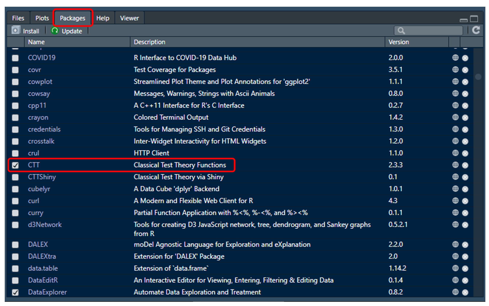
To call a particular function from a package, we need to know the
function name. For example, we can use the alpha() function
in the psych package to calculate internal consistency
values such as coefficient alpha. Since we are going to use multiple
functions from different packages, it might be a bit difficult to
remember which package each function comes from. Therefore, we will use
the following format in the codes: packagename::function.
For example, psych::alpha() indicates that we are calling
the alpha() function from the psych
package. If there is no “::” included in the function name (e.g.,
plot()), it means that we are using a built-in R function
(i.e., a function that comes with the base R).
🔔 INFORMATION: Using
::has two more benefits. First, when we use::, we can call a particular function from a package without activating the entire package. For example,psych::alpha()allows us to use thealpha()function without having to runlibrary("psych")beforehand. Second, if two or more packages activated within an R session include a function with the same name, then R only gives us access the function from the most recently activated package. This is called “masking”. For example, the ggplot2 package also has analpha()function. If we first loaded psych and then ggplot2, thealpha()from ggplot2 would mask thealpha()function from psych. However, by usingpsych::alpha(), we can still access thealpha()function from psych.
Exploratory data analysis (EDA) refers to the process of performing initial investigations on data in order to detect anomalies (e.g., unexpected values, high levels of missigness), check various assumptions (e.g., normality), and discover interesting patterns. When performing EDA, we often use both statistical and data visualization tools to summarize the data.
Before we begin the analysis, let’s set up our working directory. I created a new folder called “CTT Analysis” on my desktop and put our data (nfc_data.csv) into this folder. You can also create the same folder in a convenient location in your computer and save the path to this folder. Now, we can change our working directory to this new folder:
setwd("C:/Users/Okan/Desktop/CTT Analysis")👍 SUGGESTION: We will use several datasets in the following examples. Downloading and putting all the data files into your working directory will make accessing these files easier.
Next, we will import the data into R. Since nfc_data.csv is a
comma-separated-values file (see the .csv extension), we will use the
read.csv() function to read our data into R and then save
it as “nfc”.
nfc <- read.csv("nfc_data.csv", header = TRUE)Using the head() function, we can now view the first 6
rows of the dataset:
head(nfc)Additionally, we can use View(nfc) that opens the data
viewer in RStudio and allows us to open the data in a spreadsheet-like
format.
id age sex education nfc01 nfc02 nfc03 nfc04 nfc05 nfc06 nfc07 nfc08 nfc09 nfc10 nfc11 nfc12 nfc13 nfc14
1 1 26 Male Abitur 5 7 5 1 6 2 2 5 2 1 2 2 6 5
2 4 19 Female Abitur 5 5 3 2 5 3 3 3 2 4 3 2 3 2
3 7 23 Female Abitur 5 6 5 1 7 3 2 3 1 3 3 1 6 5
4 8 24 Female Abitur 5 5 4 2 5 5 2 2 2 2 4 3 2 3
5 11 24 Female Abitur 2 3 3 5 3 5 6 1 6 6 6 6 2 1
6 12 20 Female Abitur 6 6 6 1 6 3 1 1 1 1 1 1 6 6
nfc15 nfc16 action_orientation effortful_control self_control
1 2 1 10 11 5
2 4 4 11 32 16
3 1 1 13 10 -2
4 1 1 5 0 -4
5 5 5 18 10 11
6 2 2 20 24 11We can also see the names and types of the variables in our dataset
using the str() function (which shows us the
structure of the data):
str(nfc)'data.frame': 1209 obs. of 23 variables:
$ id : int 1 4 7 8 11 12 15 16 21 23 ...
$ age : int 26 19 23 24 24 20 25 27 21 25 ...
$ sex : chr "Male" "Female" "Female" "Female" ...
$ education : chr "Abitur" "Abitur" "Abitur" "Abitur" ...
$ nfc01 : int 5 5 5 5 2 6 3 7 7 6 ...
$ nfc02 : int 7 5 6 5 3 6 4 4 5 7 ...
$ nfc03 : int 5 3 5 4 3 6 4 5 3 7 ...
$ nfc04 : int 1 2 1 2 5 1 1 6 1 1 ...
$ nfc05 : int 6 5 7 5 3 6 6 6 6 7 ...
$ nfc06 : int 2 3 3 5 5 3 5 3 6 2 ...
$ nfc07 : int 2 3 2 2 6 1 3 1 1 1 ...
$ nfc08 : int 5 3 3 2 1 1 2 2 2 2 ...
$ nfc09 : int 2 2 1 2 6 1 3 2 1 1 ...
$ nfc10 : int 1 4 3 2 6 1 3 2 2 2 ...
$ nfc11 : int 2 3 3 4 6 1 1 1 1 1 ...
$ nfc12 : int 2 2 1 3 6 1 1 1 1 1 ...
$ nfc13 : int 6 3 6 2 2 6 3 4 6 5 ...
$ nfc14 : int 5 2 5 3 1 6 3 4 4 5 ...
$ nfc15 : int 2 4 1 1 5 2 1 2 2 1 ...
$ nfc16 : int 1 4 1 1 5 2 2 2 2 2 ...
$ action_orientation: int 10 11 13 5 18 20 6 16 12 8 ...
$ effortful_control : int 11 32 10 0 10 24 -3 2 -6 21 ...
$ self_control : int 5 16 -2 -4 11 11 -4 3 -10 5 ...The dataset consists of 1209 rows (i.e., participants) and 23
variables (id, age, sex, education, nfc01 to nfc16 representing the
responses to the NFC Scale items, and three scores for criterion
measures). We can obtain a bit more information on the dataset using the
introduce() and plot_intro() functions from
the DataExplorer package (Cui,
2020):
DataExplorer::introduce(nfc)| rows | 1,209 |
| columns | 23 |
| discrete_columns | 2 |
| continuous_columns | 21 |
| all_missing_columns | 0 |
| total_missing_values | 8 |
| complete_rows | 1,201 |
| total_observations | 27,807 |
| memory_usage | 126,664 |
The output above gives us a summary of our dataset with additional information on the total number of missing values, total number of observations, and so on.
DataExplorer::plot_intro(nfc)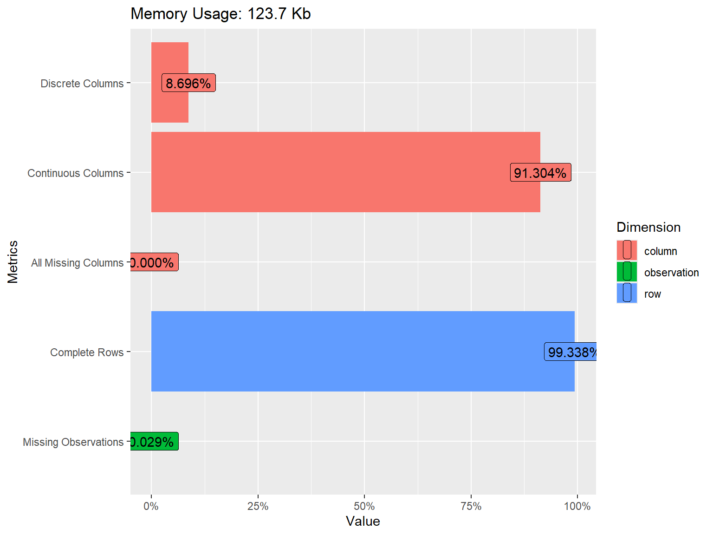
The plot above shows that most of the variables are continuous (note that R recognizes Likert-scale items as continuous variables although they are actually ordinal) while there are also some discrete (i.e., categorical) variables (i.e., sex and education) in the dataset. We also see that some of the variables in the dataset have missing values but the proportion of missing data is very small (only 0.023%). Depending on the sample size, missingness > 10% is often concerning as the loss of information due to these missing values is likely to influence the results of our analysis.
To have a closer look at missing values, we can visualize the proportion of missingness for each variable. The following plot shows that age and sex have some missing values but the proportion of missingness is very small (less than 1%).
DataExplorer::plot_missing(nfc)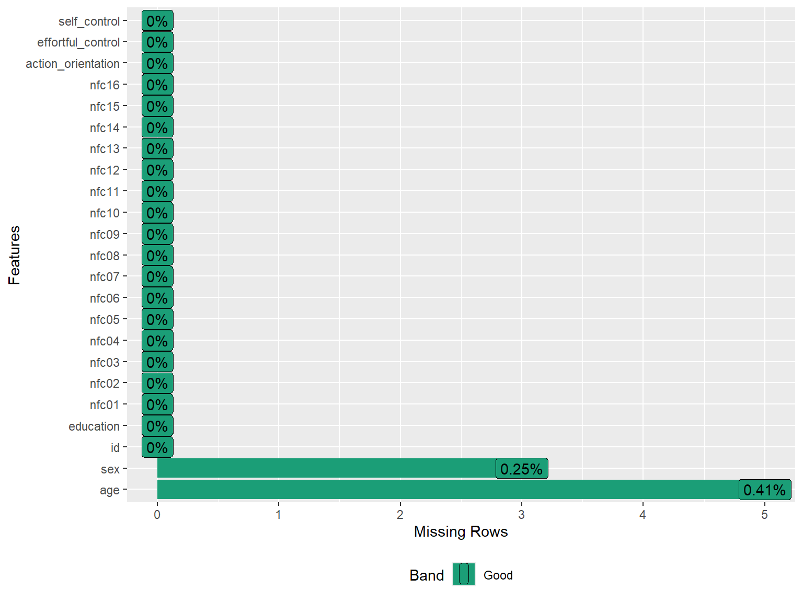
The DataExplorer package also has additional functions to visualize both categorical and continuous variables. The package is using a simpler language to create plots based on the ggplot2 package (Wickham et al., 2021) in the background.
# Categorical variables (bar plots)
DataExplorer::plot_bar(data = nfc[, c("education", "sex")])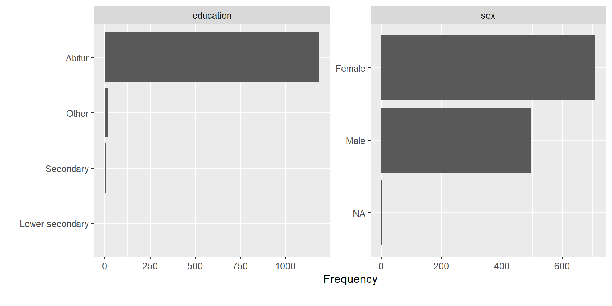
# Continuous variables (histogram)
DataExplorer::plot_histogram(data = nfc[, c("age", "self_control", "action_orientation", "effortful_control")])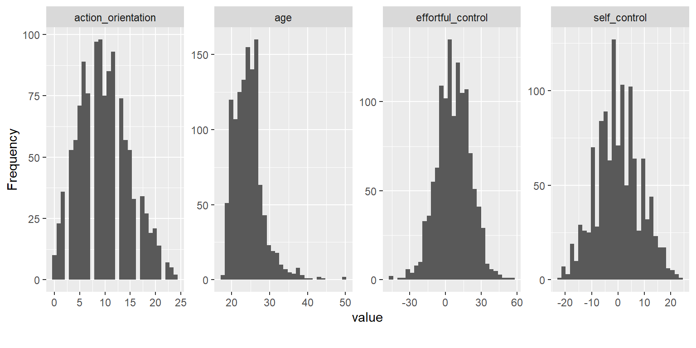
# Continuous variables (boxplot) by a categorical variable
DataExplorer::plot_boxplot(data = nfc[!is.na(nfc$sex), # select cases where sex is not missing
# Select variables of interest
c("sex", "self_control", "action_orientation", "effortful_control")],
by = "sex") # Draw boxplots by sex (a categorical variable)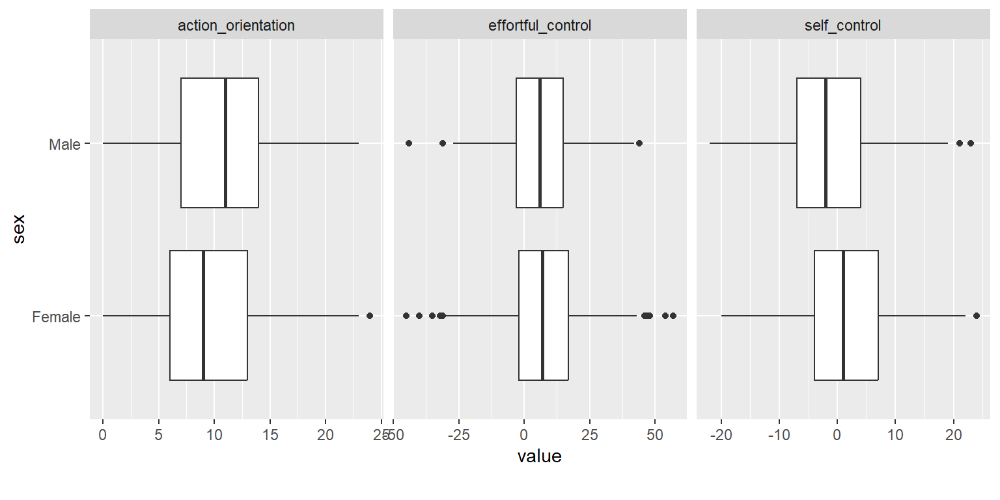
To organize all the summary statistics into a single report, we could
use the create_report() function. It runs most functions in
DataExplorer and outputs a HTML report file (assuming
rmarkdown has been already installed).
# Drop the id variable so it doesn't get analyzed with the other variables
nfc <- DataExplorer::drop_columns(nfc, "id")
# This code creates a report and saves it into the working directory
DataExplorer::create_report(data = nfc,
report_title = "NFC Scale Analysis",
output_file = "nfc_report.html")To obtain a detailed summary of the nfc dataset within a single
analysis, we can use the skim() function from the
skimr package (Waring et al.,
2021). As you can see from the output below, we obtained similar
descriptive statistics for the variables in the nfc dataset:
In “Variable type: character”, we see the number of missing values, complete data rate, the minimum number of characters (e.g., 4 for sex: male) and maximum number of characters (e.g., 6 for sex: female), and the number of unique values (e.g., 2 for sex: male and female) for the variables.
In “Variable type: numeric”, we see the number of missing values, complete data rate, mean, standard deviation, min (p0), 25th percentile (p25), median (p50), 75% percentile (p75), and max (p100) values for the variables.
skimr::skim(nfc)-- Data Summary ------------------------
Values
Name nfc
Number of rows 1209
Number of columns 23
_______________________
Column type frequency:
character 2
numeric 21
________________________
Group variables None
-- Variable type: character ----------------------------------------------------------------------------------------------------------------------------------------------------------------------------
# A tibble: 2 x 8
skim_variable n_missing complete_rate min max empty n_unique whitespace
* <chr> <int> <dbl> <int> <int> <int> <int> <int>
1 sex 3 0.998 4 6 0 2 0
2 education 0 1 5 15 0 4 0
-- Variable type: numeric ------------------------------------------------------------------------------------------------------------------------------------------------------------------------------
# A tibble: 21 x 10
skim_variable n_missing complete_rate mean sd p0 p25 p50 p75 p100
* <chr> <int> <dbl> <dbl> <dbl> <dbl> <dbl> <dbl> <dbl> <dbl>
1 id 0 1 882. 491. 1 464 888 1305 1735
2 age 5 0.996 24.4 3.93 18 22 24 26 50
3 nfc01 0 1 5.54 1.19 1 5 6 6 7
4 nfc02 0 1 4.94 1.39 1 4 5 6 7
5 nfc03 0 1 4.44 1.40 1 3 5 5 7
6 nfc04 0 1 2.47 1.47 1 1 2 3 7
7 nfc05 0 1 5.82 1.23 1 5 6 7 7
8 nfc06 0 1 3.75 1.50 1 3 4 5 7
9 nfc07 0 1 2.70 1.32 1 2 2 3 7
10 nfc08 0 1 3.34 1.55 1 2 3 4 7
11 nfc09 0 1 2.45 1.52 1 1 2 3 7
12 nfc10 0 1 3.16 1.52 1 2 3 4 7
13 nfc11 0 1 2.75 1.45 1 2 2 4 7
14 nfc12 0 1 2.45 1.40 1 1 2 3 7
15 nfc13 0 1 4.10 1.42 1 3 4 5 7
16 nfc14 0 1 3.57 1.47 1 2 4 4 7
17 nfc15 0 1 2.25 1.34 1 1 2 3 7
18 nfc16 0 1 2.48 1.40 1 1 2 3 7
19 action_orientation 0 1 9.84 4.96 0 6 9 13 24
20 effortful_control 0 1 6.84 14.0 -45 -2 7 16 57
21 self_control 0 1 0.117 8.36 -22 -5 0 5 24The describe() function from the psych
package (Revelle, 2021) is another useful
function to get basic descriptive statistics for data collected for
psychometric and psychology studies (see ?psych::describe
for more details about this function).
psych::describe(x = nfc) vars n mean sd median trimmed mad min max range skew kurtosis se
id 1 1209 881.61 490.93 888 883.82 624.17 1 1735 1734 -0.03 -1.18 14.12
age 2 1204 24.43 3.93 24 24.00 2.97 18 50 32 1.54 4.79 0.11
sex* 3 1206 1.41 0.49 1 1.39 0.00 1 2 1 0.36 -1.87 0.01
education* 4 1209 1.04 0.31 1 1.00 0.00 1 4 3 7.59 58.45 0.01
nfc01 5 1209 5.54 1.19 6 5.68 1.48 1 7 6 -1.18 1.56 0.03
nfc02 6 1209 4.94 1.39 5 5.01 1.48 1 7 6 -0.49 -0.31 0.04
nfc03 7 1209 4.44 1.40 5 4.51 1.48 1 7 6 -0.32 -0.48 0.04
nfc04 8 1209 2.47 1.47 2 2.25 1.48 1 7 6 1.16 0.68 0.04
nfc05 9 1209 5.82 1.23 6 6.01 1.48 1 7 6 -1.33 2.09 0.04
nfc06 10 1209 3.75 1.50 4 3.69 1.48 1 7 6 0.24 -0.60 0.04
nfc07 11 1209 2.70 1.32 2 2.57 1.48 1 7 6 0.79 0.20 0.04
nfc08 12 1209 3.34 1.55 3 3.27 1.48 1 7 6 0.40 -0.65 0.04
nfc09 13 1209 2.45 1.52 2 2.23 1.48 1 7 6 1.03 0.32 0.04
nfc10 14 1209 3.16 1.52 3 3.06 1.48 1 7 6 0.61 -0.30 0.04
nfc11 15 1209 2.75 1.45 2 2.61 1.48 1 7 6 0.72 -0.15 0.04
nfc12 16 1209 2.45 1.40 2 2.26 1.48 1 7 6 0.93 0.18 0.04
nfc13 17 1209 4.10 1.42 4 4.13 1.48 1 7 6 -0.13 -0.54 0.04
nfc14 18 1209 3.57 1.47 4 3.54 1.48 1 7 6 0.11 -0.50 0.04
nfc15 19 1209 2.25 1.34 2 2.03 1.48 1 7 6 1.25 1.23 0.04
nfc16 20 1209 2.48 1.40 2 2.28 1.48 1 7 6 1.06 0.77 0.04
action_orientation 21 1209 9.84 4.96 9 9.65 4.45 0 24 24 0.33 -0.40 0.14
effortful_control 22 1209 6.84 13.97 7 6.93 13.34 -45 57 102 -0.08 0.27 0.40
self_control 23 1209 0.12 8.36 0 0.08 7.41 -22 24 46 0.06 -0.26 0.24Before moving to item analysis, we should also check the correlations among the items to gauge how strongly the items are associated with each other. We expect the items to be associated with each other up to a certain degree because we assume that the items measure the same latent trait (the construct of NFC in this example). Having weakly-correlated items suggests that some items may not be measuring the same latent trait. Having very highly-correlated items (e.g., \(r > .95\)) suggests that there is some redundancy in the instrument because some items provide us with the same information about the individuals who answered the items.
In addition, we know that some items in the NFC Scale are negatively-worded and thus responses to these items may be in the opposite direction with the rest of the items. For example, individuals with high NFC are likely to choose “7 = completely agree” for a positively-worded item such as “Enjoyment of tasks that involve problem-solving” whereas they are expected to choose “1 = completely disagree” for a negatively-worded item such as “Anticipation and avoiding of situations that may require in-depth thinking”.
Now, we will create a correlation matrix of the NFC items and review
the strength and direction of the relationships among the items. First,
we will save the responses as a separate dataset to make our subsequent
analyses easier. The items in the nfc dataset are named as nfc01, nfc02,
…, nfc16. That is, they all start with the same prefix: nfc. So, we can
use this prefix to select the items more easily. We will use the
select() function from dplyr.
starts_with("nfc") will help us choose the variables
starting with “nfc” as a selection condition.
response <- dplyr::select(nfc, # name of the dataset
starts_with("nfc")) # variables to be selected
head(response) nfc01 nfc02 nfc03 nfc04 nfc05 nfc06 nfc07 nfc08 nfc09 nfc10 nfc11 nfc12 nfc13
1 5 7 5 1 6 2 2 5 2 1 2 2 6
2 5 5 3 2 5 3 3 3 2 4 3 2 3
3 5 6 5 1 7 3 2 3 1 3 3 1 6
4 5 5 4 2 5 5 2 2 2 2 4 3 2
5 2 3 3 5 3 5 6 1 6 6 6 6 2
6 6 6 6 1 6 3 1 1 1 1 1 1 6
nfc14 nfc15 nfc16
1 5 2 1
2 2 4 4
3 5 1 1
4 3 1 1
5 1 5 5
6 6 2 2Alternatively, we could type each item by one one (which is much more tedious):
response <- dplyr::select(nfc, # name of the dataset
nfc01, nfc02, nfc03, nfc04, ..., nfc16) # variables to be selectedNext, we will compute the correlations among these items. Remember
that the NFC items follow an ordinal scale: 1=completely disagree to
7=completely agree. Therefore, instead of Pearson correlation (which can
be obtained using the cor() function in R), we will use the
polychoric() function from psych to
calculate polychoric correlations. The polychoric()
function produces several outcomes but we only want to keep
rho- (i.e., the correlation matrix of the items).
# Save the correlation matrix
cormat <- psych::polychoric(x = response)$rho
# Print the correlation matrix
print(cormat)| nfc01 | nfc02 | nfc03 | nfc04 | nfc05 | nfc06 | nfc07 | nfc08 | nfc09 | nfc10 | nfc11 | nfc12 | nfc13 | nfc14 | nfc15 | nfc16 | |
|---|---|---|---|---|---|---|---|---|---|---|---|---|---|---|---|---|
| nfc01 | 1.0000 | 0.4903 | 0.4207 | -0.3101 | 0.3664 | -0.2130 | -0.4443 | -0.3682 | -0.3349 | -0.4170 | -0.3980 | -0.3301 | 0.4784 | 0.3739 | -0.3168 | -0.3646 |
| nfc02 | 0.4903 | 1.0000 | 0.5586 | -0.3519 | 0.4302 | -0.1715 | -0.5025 | -0.4101 | -0.3044 | -0.3397 | -0.3501 | -0.2941 | 0.4329 | 0.4345 | -0.3413 | -0.3391 |
| nfc03 | 0.4207 | 0.5586 | 1.0000 | -0.3286 | 0.4037 | -0.2342 | -0.3957 | -0.3290 | -0.1764 | -0.2571 | -0.2960 | -0.2650 | 0.4211 | 0.3674 | -0.2463 | -0.2069 |
| nfc04 | -0.3101 | -0.3519 | -0.3286 | 1.0000 | -0.3525 | 0.1755 | 0.4341 | 0.3820 | 0.3274 | 0.2870 | 0.3533 | 0.3746 | -0.2351 | -0.2096 | 0.2878 | 0.2237 |
| nfc05 | 0.3664 | 0.4302 | 0.4037 | -0.3525 | 1.0000 | -0.1670 | -0.3832 | -0.3043 | -0.2884 | -0.2200 | -0.3305 | -0.2573 | 0.3159 | 0.2573 | -0.2913 | -0.2208 |
| nfc06 | -0.2130 | -0.1715 | -0.2342 | 0.1755 | -0.1670 | 1.0000 | 0.3214 | 0.2004 | 0.2180 | 0.2964 | 0.1882 | 0.2166 | -0.1895 | -0.1342 | 0.1524 | 0.1892 |
| nfc07 | -0.4443 | -0.5025 | -0.3957 | 0.4341 | -0.3832 | 0.3214 | 1.0000 | 0.5226 | 0.4447 | 0.4498 | 0.4897 | 0.4943 | -0.4082 | -0.3531 | 0.3763 | 0.3402 |
| nfc08 | -0.3682 | -0.4101 | -0.3290 | 0.3820 | -0.3043 | 0.2004 | 0.5226 | 1.0000 | 0.4514 | 0.3984 | 0.5125 | 0.3660 | -0.3532 | -0.3339 | 0.2993 | 0.3034 |
| nfc09 | -0.3349 | -0.3044 | -0.1764 | 0.3274 | -0.2884 | 0.2180 | 0.4447 | 0.4514 | 1.0000 | 0.4040 | 0.4916 | 0.4466 | -0.2521 | -0.2129 | 0.3018 | 0.2612 |
| nfc10 | -0.4170 | -0.3397 | -0.2571 | 0.2870 | -0.2200 | 0.2964 | 0.4498 | 0.3984 | 0.4040 | 1.0000 | 0.4076 | 0.4707 | -0.2951 | -0.2215 | 0.2306 | 0.2640 |
| nfc11 | -0.3980 | -0.3501 | -0.2960 | 0.3533 | -0.3305 | 0.1882 | 0.4897 | 0.5125 | 0.4916 | 0.4076 | 1.0000 | 0.4317 | -0.3984 | -0.3468 | 0.2793 | 0.2888 |
| nfc12 | -0.3301 | -0.2941 | -0.2650 | 0.3746 | -0.2573 | 0.2166 | 0.4943 | 0.3660 | 0.4466 | 0.4707 | 0.4317 | 1.0000 | -0.2979 | -0.2044 | 0.2974 | 0.2841 |
| nfc13 | 0.4784 | 0.4329 | 0.4211 | -0.2351 | 0.3159 | -0.1895 | -0.4082 | -0.3532 | -0.2521 | -0.2951 | -0.3984 | -0.2979 | 1.0000 | 0.6012 | -0.2304 | -0.2549 |
| nfc14 | 0.3739 | 0.4345 | 0.3674 | -0.2096 | 0.2573 | -0.1342 | -0.3531 | -0.3339 | -0.2129 | -0.2215 | -0.3468 | -0.2044 | 0.6012 | 1.0000 | -0.2059 | -0.1996 |
| nfc15 | -0.3168 | -0.3413 | -0.2463 | 0.2878 | -0.2913 | 0.1524 | 0.3763 | 0.2993 | 0.3018 | 0.2306 | 0.2793 | 0.2974 | -0.2304 | -0.2059 | 1.0000 | 0.7530 |
| nfc16 | -0.3646 | -0.3391 | -0.2069 | 0.2237 | -0.2208 | 0.1892 | 0.3402 | 0.3034 | 0.2612 | 0.2640 | 0.2888 | 0.2841 | -0.2549 | -0.1996 | 0.7530 | 1.0000 |
One thing that we can see right away is negative values in the
correlation matrix, confirming that some items are indeed negatively
correlated with each other. However, reviewing the rest of this 16x16
correlation matrix is not necessarily easy. We can’t just eyeball the
values to evaluate the associations among the items. Therefore, we will
create a correlation matrix plot using the ggcorrplot
package (Kassambara, 2019). The package
has a function with the same name, ggcorrplot(), that
transforms a correlation matrix into a nice correlation matrix plot
(note that a similar plot can be created using corPlot()
from psych).
ggcorrplot::ggcorrplot(corr = cormat, # correlation matrix
type = "lower", # print only the lower part of the correlation matrix
show.diag = TRUE, # show the diagonal values of 1
lab = TRUE, # add correlation values as labels
lab_size = 3) # Size of the labels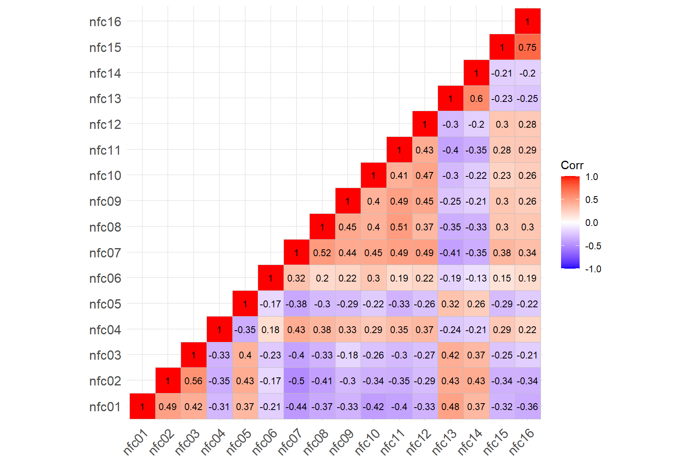
There are tons of options to customize the correlation matrix plot
(run ?ggcorrplot::ggcorrplot to see the help page), but
this is already a very good visualization for us to evaluate the
correlations among the items. We see that several items on the scale
(see the blue-coloured boxes) are negatively correlated with the rest of
the items. These are the (R) marked items in the NFC Scale (i.e.,
negatively-worded items). We will go ahead and reverse-code the
responses to these items (i.e., 1=completely agree to 7=completely
disagree) to put all the items in the same direction.
We will use the reverse.code() function from
psych for this process. We will create a reverse-coding
key where “1” keeps the item the same and “-1” reverse-codes the item.
In nfc_key below, we type “1” three times (no
reverse-coding for the first three items), type “-1” for the 4th item
(reverse-code the item), type 1 for the 5th item (no reverse-coding),
and so on. That is, the values in nfc_key correspond to the
positions of the items in the response dataset. Then, we
use reverse.code() to apply the key and transform the data
(saved as response_recoded).
# -1 means reverse-code the item
nfc_key <- c(1,1,1,-1,1,-1,-1,-1,-1,-1,-1,-1,1,1,-1,-1)
response_recoded <- psych::reverse.code(
keys = nfc_key, # reverse-coding key
items = response, # dataset to be transformed
mini = 1, # minimum response value
maxi = 7) # maximum response valueLet’s see if our transformation worked:
cormat_recoded <- psych::polychoric(response_recoded)$rho
ggcorrplot::ggcorrplot(corr = cormat_recoded,
type = "lower",
show.diag = TRUE,
lab = TRUE,
lab_size = 3) 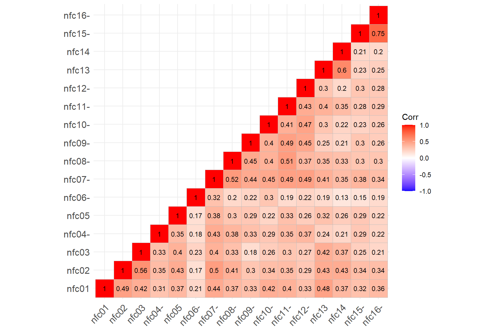
We can see in the correlation matrix plot that all the items are now
positively correlated with each other. Most correlations are moderate
while there also some items (e.g., nfc06) that seem to have low
correlations with the other items in the NFC scale. Also, we see that
reverse.code() changed the names of the reverse-coded items
by include “-” at the end (e.g., nfc04-). This is not necessarily a
problem. However, if we want to keep the original variable names (i.e.,
nfc01 to nfc16), we can rename the column names using the
colnames() function. The following will replace the column
names of the transformed data (i.e., response_recoded) with
the column names of the original response data (i.e.,
response) and then save the dataset as a data frame (the
typical data format in R).
# Rename the columns
colnames(response_recoded) <- colnames(response)
# Save the data as a data frame
response_recoded <- as.data.frame(response_recoded)
# Preview the first six rows of the data
head(response_recoded) nfc01 nfc02 nfc03 nfc04 nfc05 nfc06 nfc07 nfc08 nfc09 nfc10 nfc11 nfc12 nfc13 nfc14 nfc15 nfc16
1 5 7 5 7 6 6 6 3 6 7 6 6 6 5 6 7
2 5 5 3 6 5 5 5 5 6 4 5 6 3 2 4 4
3 5 6 5 7 7 5 6 5 7 5 5 7 6 5 7 7
4 5 5 4 6 5 3 6 6 6 6 4 5 2 3 7 7
5 2 3 3 3 3 3 2 7 2 2 2 2 2 1 3 3
6 6 6 6 7 6 5 7 7 7 7 7 7 6 6 6 6Item analysis refers to the analysis of individual items on a measurement instrument in terms of descriptive statistics (e.g., mean, standard deviation, min, and max), item-level statistics (e.g., difficulty and discrimination), and their associations with scale-level statistics (e.g., reliability). In R, there are several packages to conduct item analysis on dichotomous items (i.e., 0 or 1) and ordinal items (e.g., Likert-scale items). I will demonstrate three of these packages below:
CTT (Willse, 2018):
The itemAnalysis() function runs item analysis and returns
a brief but useful table of item statistics. Specifying the dataset to
be analyzed (response_recoded) in the itemAnalysis()
function is enough to run item analysis. In the following example, we
will also set two flags for point-biserial correlation (pBisFlag) and
biserial correlation (bisFlag). Both of these statistics indicate the
discriminatory power of the items. In practice, we prefer both
point-biserial correlation and biserial correlation values to be at
least 0.2 or larger. So, we will set the flag at 0.2 so that the
function shows us (using an “X” sign) the items with discrimination of
.2 or less (see more details on the help page via
?CTT::itemAnalysis).
# Run the item analysis and save it as itemanalysis_ctt
itemanalysis_ctt <- CTT::itemAnalysis(items = response_recoded, pBisFlag = .2, bisFlag = .2)
# Print the item report
itemanalysis_ctt$itemReport itemName itemMean pBis bis alphaIfDeleted lowPBis lowBis
1 nfc01 5.535 0.5830 0.6325 0.8603
2 nfc02 4.945 0.5984 0.6213 0.8588
3 nfc03 4.436 0.5121 0.5279 0.8626
4 nfc04 5.527 0.4276 0.4679 0.8666
5 nfc05 5.819 0.4658 0.5132 0.8647
6 nfc06 4.255 0.3164 0.3255 0.8718
7 nfc07 5.299 0.6638 0.7013 0.8563
8 nfc08 4.660 0.5697 0.5896 0.8599
9 nfc09 5.549 0.4917 0.5349 0.8637
10 nfc10 4.837 0.5032 0.5251 0.8631
11 nfc11 5.255 0.5773 0.6088 0.8596
12 nfc12 5.554 0.5070 0.5468 0.8629
13 nfc13 4.104 0.5384 0.5524 0.8614
14 nfc14 3.571 0.4586 0.4711 0.8651
15 nfc15 5.753 0.4678 0.5153 0.8646
16 nfc16 5.524 0.4585 0.4944 0.8650 In the output above, “itemMean” is the average response value for each item (which is not necessarily useful given that our items are ordinal), “pBis” and “bis” refer to point-biserial and bi-serial correlations respectively, “alphaIfDeleted” indicates how the reliability of the instrument would change if each item were to be removed (we will discuss reliability in the next section), and the last two columns (“lowPBis” and “lowBis”) are the columns where we would see flags (i.e., X marks) if the values are less than 0.2. In this example, all the items seem to have pBis and bis values larger than 0.2 and thus there are no flagged items.
psych (Revelle, 2021):
The alpha() function runs item analysis and returns a
detailed output with both item-level and scale-level statistics. To use
the function, we need to specify the response dataset to be analyzed
(i.e., x = response_recoded). The function also involves
other arguments (e.g., na.rm = TRUE to remove missing
values and find pairwise correlations), but the default values for these
arguments are sufficient to conduct item analysis (see more details on
the help page via ?psych::alpha).
# Run the item analysis and save it as itemanalysis_psych
itemanalysis_psych <- psych::alpha(x = response_recoded)
# Print the results
itemanalysis_psych
Reliability analysis
Call: psych::alpha(x = response_recoded)
raw_alpha std.alpha G6(smc) average_r S/N ase mean sd median_r
0.87 0.87 0.88 0.3 6.8 0.0054 5 0.82 0.29
lower alpha upper 95% confidence boundaries
0.86 0.87 0.88
Reliability if an item is dropped:
raw_alpha std.alpha G6(smc) average_r S/N alpha se var.r med.r
nfc01 0.86 0.86 0.87 0.29 6.2 0.0059 0.0098 0.27
nfc02 0.86 0.86 0.87 0.29 6.2 0.0059 0.0091 0.28
nfc03 0.86 0.86 0.88 0.30 6.4 0.0058 0.0094 0.29
nfc04 0.87 0.87 0.88 0.31 6.6 0.0056 0.0098 0.30
nfc05 0.86 0.87 0.88 0.30 6.5 0.0057 0.0100 0.30
nfc06 0.87 0.87 0.89 0.31 6.9 0.0054 0.0084 0.31
nfc07 0.86 0.86 0.87 0.29 6.0 0.0060 0.0092 0.27
nfc08 0.86 0.86 0.88 0.29 6.3 0.0059 0.0098 0.28
nfc09 0.86 0.87 0.88 0.30 6.4 0.0057 0.0097 0.30
nfc10 0.86 0.87 0.88 0.30 6.4 0.0058 0.0099 0.29
nfc11 0.86 0.86 0.87 0.29 6.2 0.0059 0.0096 0.28
nfc12 0.86 0.87 0.88 0.30 6.4 0.0058 0.0098 0.29
nfc13 0.86 0.86 0.87 0.30 6.3 0.0058 0.0091 0.29
nfc14 0.87 0.87 0.88 0.30 6.5 0.0057 0.0088 0.29
nfc15 0.86 0.87 0.87 0.30 6.5 0.0057 0.0084 0.30
nfc16 0.87 0.87 0.87 0.30 6.5 0.0057 0.0083 0.30
Item statistics
n raw.r std.r r.cor r.drop mean sd
nfc01 1209 0.64 0.65 0.62 0.58 5.5 1.2
nfc02 1209 0.66 0.67 0.65 0.60 4.9 1.4
nfc03 1209 0.59 0.59 0.56 0.51 4.4 1.4
nfc04 1209 0.52 0.51 0.46 0.43 5.5 1.5
nfc05 1209 0.54 0.55 0.50 0.47 5.8 1.2
nfc06 1209 0.42 0.41 0.34 0.32 4.3 1.5
nfc07 1209 0.72 0.72 0.70 0.66 5.3 1.3
nfc08 1209 0.65 0.64 0.61 0.57 4.7 1.6
nfc09 1209 0.58 0.57 0.53 0.49 5.5 1.5
nfc10 1209 0.59 0.58 0.54 0.50 4.8 1.5
nfc11 1209 0.65 0.64 0.62 0.58 5.3 1.4
nfc12 1209 0.58 0.58 0.54 0.51 5.6 1.4
nfc13 1209 0.61 0.61 0.59 0.54 4.1 1.4
nfc14 1209 0.54 0.54 0.51 0.46 3.6 1.5
nfc15 1209 0.55 0.55 0.53 0.47 5.8 1.3
nfc16 1209 0.54 0.54 0.53 0.46 5.5 1.4
Non missing response frequency for each item
1 2 3 4 5 6 7 miss
nfc01 0.01 0.02 0.05 0.07 0.25 0.43 0.18 0
nfc02 0.01 0.05 0.10 0.18 0.27 0.26 0.12 0
nfc03 0.02 0.08 0.15 0.22 0.29 0.19 0.05 0
nfc04 0.01 0.05 0.06 0.08 0.15 0.37 0.28 0
nfc05 0.01 0.02 0.03 0.06 0.21 0.33 0.34 0
nfc06 0.04 0.11 0.14 0.27 0.21 0.19 0.05 0
nfc07 0.01 0.03 0.07 0.14 0.24 0.35 0.17 0
nfc08 0.02 0.08 0.13 0.18 0.24 0.23 0.11 0
nfc09 0.02 0.03 0.07 0.11 0.15 0.28 0.34 0
nfc10 0.03 0.06 0.12 0.15 0.25 0.28 0.12 0
nfc11 0.01 0.04 0.09 0.13 0.22 0.30 0.21 0
nfc12 0.01 0.02 0.09 0.09 0.18 0.32 0.30 0
nfc13 0.04 0.11 0.19 0.25 0.25 0.13 0.04 0
nfc14 0.09 0.16 0.21 0.29 0.15 0.07 0.03 0
nfc15 0.01 0.02 0.05 0.07 0.17 0.32 0.36 0
nfc16 0.01 0.03 0.06 0.08 0.22 0.31 0.28 0The first part of the output shows the results of reliability analysis but we will discuss these results in the next section. For now, let’s focus on “Item statistics” and “Non missing response frequency for each item”.
Item statistics: The table shows the number of valid responses for each item (n), correlations between the items and the total score from the instrument (raw.r) where the item itself is included in the calculation of the total score, correlations between the items and the total score if the items were all standardized (std.r), correlations between the items and the total score corrected for both item overlap and scale reliability (r.cor), correlations between the items and the total score where the item of interest is not included in the calculation of the total score (r.drop), average response values (mean), and standard deviation of response values (sd). Compared with raw.r, r.cor and r.drop are better indicators of item discrimination as they indicate the relationship between each item and the rest of the items without contaminating the total score. We want r.cor and r.drop values to be larger than 0.2 for each item.
Non missing response frequency for each item: The table shows what percentages of respondents selected each response option of the each of the items. Each item in the NFC Scale have response options of 1 to 7 and thus we see each of these response options and the missing response in the last column. This table helps us check the distribution of response options and whether all or almost all respondents selected the same response options for some items (which lowers the reliability). In our example, we can see that the lowest response option (i.e., 1) was selected by a very low proportion of respondents whereas the middle and upper response categories (i.e., 4, 5, 6, and 7) were selected by much more respondents.
ShinyItemAnalysis (Martinkova
et al., 2021): The ItemAnalysis() function runs item
analysis and returns much more detailed output compared with those of
CTT and psych. The function has so
many options that allows users to customize the item analysis report in
several ways (see more details on the help page via
?ShinyItemAnalysis::ItemAnalysis). Also, using the
startShinyItemAnalysis() function, we can use the
interactive version of ItemAnalysis() where we can import
the data and select the analysis to be conducted using a nice user
interface based on the shiny package (for examples of
interesting shiny applications, see https://shiny.rstudio.com/).
# Run the item analysis and save it as itemanalysis_shiny
itemanalysis_shiny <- ShinyItemAnalysis::ItemAnalysis(Data = response_recoded)
# Print the results
itemanalysis_shiny Difficulty Mean SD Cut.score obs.min Min.score obs.max Max.score Prop.max.score RIR RIT
nfc01 0.7559 5.535 1.189 NA 1 1 7 7 0.17866 0.5830 0.6409
nfc02 0.6574 4.945 1.390 NA 1 1 7 7 0.12407 0.5984 0.6639
nfc03 0.5726 4.436 1.397 NA 1 1 7 7 0.04963 0.5121 0.5881
nfc04 0.7545 5.527 1.473 NA 1 1 7 7 0.27792 0.4276 0.5167
nfc05 0.8031 5.819 1.227 NA 1 1 7 7 0.34491 0.4658 0.5370
nfc06 0.5425 4.255 1.500 NA 1 1 7 7 0.04797 0.3164 0.4169
nfc07 0.7166 5.299 1.318 NA 1 1 7 7 0.17039 0.6638 0.7178
nfc08 0.6100 4.660 1.555 NA 1 1 7 7 0.10918 0.5697 0.6467
nfc09 0.7582 5.549 1.515 NA 1 1 7 7 0.33995 0.4917 0.5763
nfc10 0.6395 4.837 1.525 NA 1 1 7 7 0.11580 0.5032 0.5870
nfc11 0.7091 5.255 1.448 NA 1 1 7 7 0.21340 0.5773 0.6482
nfc12 0.7590 5.554 1.399 NA 1 1 7 7 0.29859 0.5070 0.5836
nfc13 0.5174 4.104 1.421 NA 1 1 7 7 0.03639 0.5384 0.6127
nfc14 0.4285 3.571 1.472 NA 1 1 7 7 0.02564 0.4586 0.5444
nfc15 0.7921 5.753 1.345 NA 1 1 7 7 0.35649 0.4678 0.5456
nfc16 0.7541 5.524 1.402 NA 1 1 7 7 0.27957 0.4585 0.5404
Corr.criterion ULI gULI Alpha.drop Index.rel Index.val Perc.miss Perc.nr
nfc01 NA 0.2727 NA 0.8603 0.7618 NA 0 0
nfc02 NA 0.3392 NA 0.8588 0.9231 NA 0 0
nfc03 NA 0.3049 NA 0.8626 0.8215 NA 0 0
nfc04 NA 0.2874 NA 0.8666 0.7611 NA 0 0
nfc05 NA 0.2272 NA 0.8647 0.6591 NA 0 0
nfc06 NA 0.2223 NA 0.8718 0.6253 NA 0 0
nfc07 NA 0.3415 NA 0.8563 0.9464 NA 0 0
nfc08 NA 0.3889 NA 0.8599 1.0053 NA 0 0
nfc09 NA 0.3240 NA 0.8637 0.8732 NA 0 0
nfc10 NA 0.3260 NA 0.8631 0.8952 NA 0 0
nfc11 NA 0.3537 NA 0.8596 0.9387 NA 0 0
nfc12 NA 0.2986 NA 0.8629 0.8166 NA 0 0
nfc13 NA 0.3263 NA 0.8614 0.8706 NA 0 0
nfc14 NA 0.3144 NA 0.8651 0.8012 NA 0 0
nfc15 NA 0.2595 NA 0.8646 0.7337 NA 0 0
nfc16 NA 0.2722 NA 0.8650 0.7579 NA 0 0In the output above, there is tons of information regarding the items, but the ones we will focus on include:
The ShinyItemAnalysis package also includes a
DDplot() function to visualize standardized difficulty and
discrimination statistics together. For the discrim
argument, we will use “RIR” to plot corrected item
discrimination values (alternatively, we could use “RIT” for uncorrected
discrimination values or “none” to plot only difficulty values).
# Create a difficulty and discrimination (DD) plot
ShinyItemAnalysis::DDplot(Data = response_recoded, discrim = "RIR")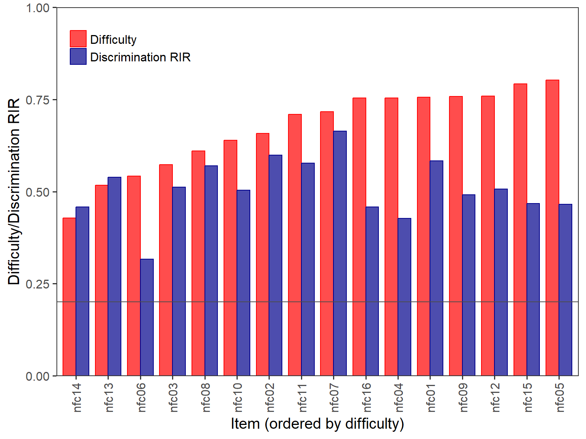
As a simple measure of reliability, split-half reliability can be
obtained by splitting a measurement instrument into two equivalent
halves, calculating the total scores on the two halves, and correlating
them. There are several ways to create the split-half (e.g., selecting
every other items, randomly, etc.). Below, we will define a custom R
function to calculate the split-half reliability (this function
originally comes from the hemp
package). To create the split-half, we can choose either
type = "alternate" to select every other item (i.e., odd
and even numbered items) or type == "random" to select two
sets of items randomly. The seed argument is just an
integer for us to control random sampling if we choose
type == "random". Changing the seed will allow us to sample
a different set of items when we run the function every time.
split_half <- function(data, type = "alternate", seed = 2022) {
# Select every other item
if (type == "alternate") {
first_half <- data[, seq(1, ncol(data), by = 2)]
second_half <- data[, seq(2, ncol(data), by = 2)]
first_total <- rowSums(first_half, na.rm = T)
second_total <- rowSums(second_half, na.rm = T)
rel <- round(cor(first_total, second_total), 3)} else
# Select two halves randomly
if (type == "random") {
set.seed(seed)
num_items <- 1:ncol(data)
first_items <- sample(num_items, round(ncol(data)/2, 0))
first_half <- data[, first_items]
second_half <- data[, -first_items]
first_total <- rowSums(first_half, na.rm = T)
second_total <- rowSums(second_half, na.rm = T)
rel <- round(cor(first_total, second_total), 3)}
return(rel)
}Now, let’s see what the split_half() function gives us
for the NFC Scale:
split_half(data = response_recoded, type = "alternate")[1] 0.807split_half(data = response_recoded, type = "random", seed = 2022)[1] 0.826By changing the seed, we can run the split_half()
function many times, obtain a sample of split-half reliability
estimates, and find the average of these estimates as our final
split-half reliability value. Luckily, this process is much easier with
splitHalf() function in the psych package.
This functions calculates all (or at least a large number of) possible
split-half reliability values for a given dataset. Only specifying the
dataset to be analyzed is sufficient to use this function.
psych::splitHalf(r = response_recoded)Split half reliabilities
Call: psych::splitHalf(r = response_recoded)
Maximum split half reliability (lambda 4) = 0.92
Guttman lambda 6 = 0.88
Average split half reliability = 0.87
Guttman lambda 3 (alpha) = 0.87
Guttman lambda 2 = 0.88
Minimum split half reliability (beta) = 0.78
Average interitem r = 0.3 with median = 0.29In the output above, we see that the minimum and maximum split-half
reliability estimates are 0.78 and 0.92, respectively. The output also
reports the average values of all split-half reliability estimates as
0.87. Now, let’s take a closer look at the split-half reliability
estimates we obtained for the NFC Scale. Using the
raw = TRUE argument, we will save all the split-half
reliability values and then visualize them using a histogram (with
hist()). The following histogram shows how the split-half
reliability estimates the NFC scale vary.
# Save the reliability results as sp_rel
sp_rel <- psych::splitHalf(r = response_recoded, raw = TRUE)
hist(x = sp_rel$raw, # extract the raw reliability values saved in sp_rel
breaks = 101, # the number of breakpoints between histogram cells
xlab = "Split-Half Reliability", # label for the x-axis
main = "All Split-Half Reliabilities for the NFC Scale") # title for the histogram
# Add a red, vertical line showing the mean
# here v is a (v)ertical line
# col is the colour of the line
# lwd is the width of the line (the larger, the thicker line)
# lty is the line type (1 = solid, 2 = dashed, etc.)
# See http://www.sthda.com/english/wiki/line-types-in-r-lty for more details
abline(v = mean(sp_rel$raw), col = "red", lwd = 2, lty = 2)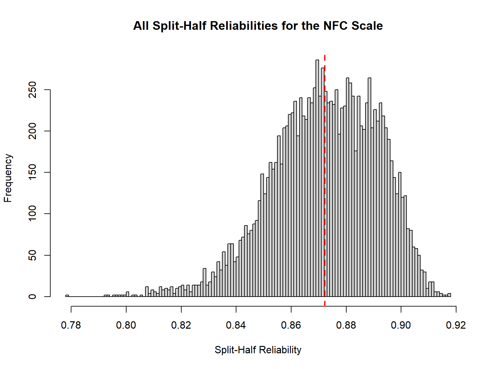
Next, we will calculate internal consistency, more specifically coefficient alpha (NOT Cronbach’s alpha), for the NFC Scale. Internal consistency is the degree of homogeneity among the items on a measurement instrument. It allows us to gauge how strongly the items in a given instrument are associated with each other. A common misconception about internal consistency is that coefficient alpha and its variants can tell us how well a measurement instrument is actually measuring what we want it to measure, which is INCORRECT. If the items measure the same target construct (which may not necessarily be what we wanted to measure), then they are expected to be internally consistent with one another (i.e., correlated) and yield reliable (i.e., consistent) results.
There are multiple ways to compute internal consistency in R. Earlier
we conducted item analysis using the CTT package, saved
the results as itemanalysis_ctt, and printed the item
analysis results using itemanalysis_ctt$itemReport. Using
the same results, we can also see the estimate of coefficient alpha for
the NFC Scale by simply printing the results:
# Print the results
itemanalysis_ctt
Number of Items
16
Number of Examinees
1209
Coefficient Alpha
0.87 Similarly, when we conducted item analysis using the
alpha() function in psych, we also
obtained the internal consistency results. Printing
itemanalysis_psych again, we can see the following
results:
Reliability analysis
Call: psych::alpha(x = response_recoded)
raw_alpha std.alpha G6(smc) average_r S/N ase mean sd median_r
0.87 0.87 0.88 0.3 6.8 0.0054 5 0.82 0.29
lower alpha upper 95% confidence boundaries
0.86 0.87 0.88
Reliability if an item is dropped:
raw_alpha std.alpha G6(smc) average_r S/N alpha se var.r med.r
nfc01 0.86 0.86 0.87 0.29 6.2 0.0059 0.0098 0.27
nfc02 0.86 0.86 0.87 0.29 6.2 0.0059 0.0091 0.28
nfc03 0.86 0.86 0.88 0.30 6.4 0.0058 0.0094 0.29
nfc04 0.87 0.87 0.88 0.31 6.6 0.0056 0.0098 0.30
nfc05 0.86 0.87 0.88 0.30 6.5 0.0057 0.0100 0.30
nfc06 0.87 0.87 0.89 0.31 6.9 0.0054 0.0084 0.31
nfc07 0.86 0.86 0.87 0.29 6.0 0.0060 0.0092 0.27
nfc08 0.86 0.86 0.88 0.29 6.3 0.0059 0.0098 0.28
nfc09 0.86 0.87 0.88 0.30 6.4 0.0057 0.0097 0.30
nfc10 0.86 0.87 0.88 0.30 6.4 0.0058 0.0099 0.29
nfc11 0.86 0.86 0.87 0.29 6.2 0.0059 0.0096 0.28
nfc12 0.86 0.87 0.88 0.30 6.4 0.0058 0.0098 0.29
nfc13 0.86 0.86 0.87 0.30 6.3 0.0058 0.0091 0.29
nfc14 0.87 0.87 0.88 0.30 6.5 0.0057 0.0088 0.29
nfc15 0.86 0.87 0.87 0.30 6.5 0.0057 0.0084 0.30
nfc16 0.87 0.87 0.87 0.30 6.5 0.0057 0.0083 0.30In the output above, we see the following statistics:
Among these values, we use raw_alpha to interpret the internal consistency. For the NFC Scale, \(\alpha = 0.87\) indicates high internal consistency. The second part of the output under “Reliability if an item is dropped” shows how internal consistency changes after each item is removed from the instrument. In our example, the raw_alpha column shows that the internal consistency either remains the same or goes down to 0.86, suggesting that removing none of the items would help us improve the reliability and so we should retain the original scale.
Lastly, we will use the QME package (Brown et al., 2016) to calculate internal
consistency for the NFC Scale. In addition to coefficient alpha and
Guttman’s lambda reliability statistics, the QME
package also calculates Feldt-Gilmer and Feldt-Brennan reliability
statistics. Using the analyze() function, we will first
analyze the dataset and then print the results. By default, the
analyze() function assumes that the dataset include an ID
column for respondents but our dataset doesn’t have this column.
Therefore, we will use id = FALSE to change this setting.
In addition, we will use na_to_0 = FALSE not to recode
missing responses as zero when running the analysis (even though the nfc
dataset does not include any missing responses).
reliability_qme <- QME::analyze(test = response_recoded, id = FALSE, na_to_0 = FALSE)
reliability_qmeQME 'analyze' object.
Test name: response_recoded
Number of Items 16
Number of Examinees 1209
Descriptives
-------------------------------
Minimum Score 21.00
Maximum Score 112.00
Mean Score 80.62
Median Score 82.00
Standard Deviation 13.19
IQR 17.00
Skewness (G1) -0.65
Kurtosis (G2) 0.76
Reliabilities
-------------------------------
Estimate 95% LL 95% UL SEM
Guttman's L2 0.87 0.86 0.88 4.7
Guttman's L4 0.89 0.88 0.90 4.3
Feldt-Gilmer 0.87 0.86 0.88 4.7
Feldt-Brennan 0.87 0.86 0.88 4.7
Coefficient Alpha 0.87 0.86 0.88 4.7The output gives us some descriptive statistics based on the total score and reliability statistics at the bottom. The reliability values we obtained from psych, CTT, and QME are nearly the same (it is possible to see some minor differences due to rounding error, etc.)
As we conclude the internal consistency section, we will run a small experiment to see how the correlations among the items affect the internal consistency of an instrument. In the following example, we will replace the responses to the first two items in the NFC Scale. Instead of original responses, we will randomly generate values between 1 and 7, replace the original responses with these random values, and then check the internal consistency again.
# Create a copy of the original response dataset
response_experiment <- response_recoded
# Set the seed to control random number generation
set.seed(seed = 2525)
# Generate random integer values between 1 and 7 and replace the original responses with them
response_experiment$nfc01 <- sample.int(n = 7, size = nrow(response_experiment), replace = TRUE)
response_experiment$nfc02 <- sample.int(n = 7, size = nrow(response_experiment), replace = TRUE)
# Check the correlations among the items using the new dataset
cormat_experiment <- psych::polychoric(response_experiment)$rho
ggcorrplot::ggcorrplot(corr = cormat_experiment,
type = "lower",
show.diag = TRUE,
lab = TRUE,
lab_size = 3) 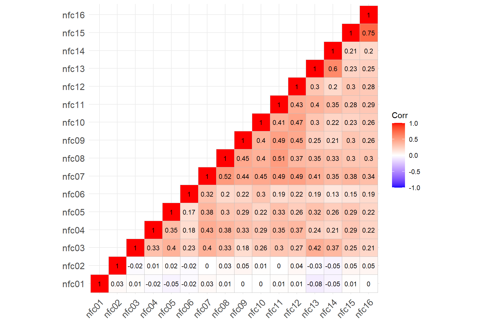
# Now check the internal consistency
QME::analyze(test = response_experiment, id = FALSE, na_to_0 = FALSE)QME 'analyze' object.
Test name: response_experiment
Number of Items 16
Number of Examinees 1209
Descriptives
-------------------------------
Minimum Score 22.00
Maximum Score 111.00
Mean Score 78.23
Median Score 79.00
Standard Deviation 11.94
IQR 16.00
Skewness (G1) -0.58
Kurtosis (G2) 0.69
Reliabilities
-------------------------------
Estimate 95% LL 95% UL SEM
Guttman's L2 0.80 0.78 0.82 5.3
Guttman's L4 0.82 0.80 0.83 5.1
Feldt-Gilmer 0.80 0.78 0.82 5.3
Feldt-Brennan 0.79 0.78 0.81 5.4
Coefficient Alpha 0.79 0.77 0.81 5.5After replacing the original responses with random values between 1
and 7, we see that the correlation between the first two items and the
remaining items disappeared. In fact, some correlations are even
negative. This finding is not surprising because the randomly-generated
values would not necessarily be correlated with the other items. The
output from the analyze() function shows that the internal
consistency for this new dataset is 0.79 (as opposed to 0.87 in the
original dataset). Given the length of the NFC Scale (16 items), having
two poor quality items significantly decreased the internal consistency
of the scale.
Although this is an exaggerated example, it still demonstrates how to identify problematic items in a given measurement instrument. Using the correlations among the items, discrimination values (i.e., item-total correlation), and the impact of removing each item on the internal consistency, we can identify poor quality items (or potentially problematic items) and shorten our measurement instrument (assuming the remaining items indicate a decent level of internal consistency). There are also more sophisticated ways to identify and remove items for the purpose of creating a shorter instrument, such as the genetic algorithm and ant colony optimization (see my blog post on how to implement these methods in R).
Before we conclude the reliability section, we will also use the
Spearman-Brown prophecy formula to predict the internal consistency of
the NFC Scale depending on the number of items in the instrument. First,
we will examine the scenario where we decide to shorten the length of
the NFC scale by a factor of 0.5 (i.e., reducing the length from 16
items to 8 items). In the earlier analysis, we estimated the internal
consistency of the NFC scale as \(\alpha =
0.87\). Using the spearman.brown() function from
CTT, we will compute how the internal consistency would
change if we reduced the length to 8 items. We specify the current value
of internal consistency (r.xx = 0.87), the desired length
(input = 0.5), and how we want to use the function
(n.or.r = "n" for finding the new internal consistency or
n.or.r = "r" for finding the new length).
CTT::spearman.brown(r.xx = 0.87, input = 0.5, n.or.r = "n")$r.new
[1] 0.7699The output shows that if we had to reduce the length of the NFC Scale
from 16 items to 8 items, the internal consistency would become roughly
0.77. In the second scenario, we will see how many more items we would
need to increase the internal consistency from 0.87 (current value) to
0.90 (target value). So, we will use input = 0.90 to
indicate our target reliability and n.or.r = "r" to request
for the new length for the NFC scale. We will save the result as n (the
factor that our instrument should be lengthened) and then multiply this
value with the current number of items (16) to find the desired number
of items required for \(\alpha =
0.90\).
# Save the result as n
n <- CTT::spearman.brown(r.xx = 0.87, input = 0.90, n.or.r = "r")
# Multiply it with the current length and round it with zero digits
round(n$n.new * 16, digits = 0)[1] 22The result above shows that we would need 22 items (i.e., 6 additional items with similar characteristics as the original NFC items) to reach the internal consistency level of 0.90.
In addition to ordinal response data from psychological instruments,
we also use CTT to analyze dichotomous (i.e., binary) response data from
educational instruments (e.g., multiple-choice exams). With dichotomous
response data, we can conduct not only the CTT-based analyses we have
have demonstrated above but also additional analyses specific to
educational assessments, such as distractor analysis. In the following
example, we will use a dataset that consists of the responses of 651
university students to the Homeostasis Concept Inventory (HCI)
multiple-choice test. This dataset originally comes from the
ShinyItemAnalysis package (see
?ShinyItemAnalysis::HCItest). A clean version of the
dataset as a comma-separated-values file (hci.csv) is available here. The file has
the following variables:
We will begin our analysis by importing the hci.csv dataset into R. Then we will
print the first six rows using the head() function and the
structure of the dataset using the str() function:
# Import the dataset
hci <- read.csv("hci.csv", header = TRUE)
# Print the first 6 rows of the dataset
# You can use head(hci, 10) to print the first 10 rows instead of 6 (default)
head(hci)
# See the structure of the dataset
str(hci) item1 item2 item3 item4 item5 item6 item7 item8 item9 item10 item11 item12 item13 item14 item15 item16
1 D B A D B B B C D A A D A A D A
2 D B A D B C B C D A A D A A C A
3 D B A D C C B C D A A D A A A A
4 D B A D B C C C D A A D A A C A
5 D B A D B C C C D A A D A A D A
6 D B A D B C C C D A A D A A C A
item17 item18 item19 item20 gender eng_first_lang study_year major
1 D C C D F yes 4 1
2 C C C D F yes 4 1
3 C C C D M yes 4 1
4 C C C D M yes 4 1
5 C C C D M yes 4 1
6 C C C D F yes 4 1'data.frame': 651 obs. of 24 variables:
$ item1 : chr "D" "D" "D" "D" ...
$ item2 : chr "B" "B" "B" "B" ...
$ item3 : chr "A" "A" "A" "A" ...
$ item4 : chr "D" "D" "D" "D" ...
$ item5 : chr "B" "B" "C" "B" ...
$ item6 : chr "B" "C" "C" "C" ...
$ item7 : chr "B" "B" "B" "C" ...
$ item8 : chr "C" "C" "C" "C" ...
$ item9 : chr "D" "D" "D" "D" ...
$ item10 : chr "A" "A" "A" "A" ...
$ item11 : chr "A" "A" "A" "A" ...
$ item12 : chr "D" "D" "D" "D" ...
$ item13 : chr "A" "A" "A" "A" ...
$ item14 : chr "A" "A" "A" "A" ...
$ item15 : chr "D" "C" "A" "C" ...
$ item16 : chr "A" "A" "A" "A" ...
$ item17 : chr "D" "C" "C" "C" ...
$ item18 : chr "C" "C" "C" "C" ...
$ item19 : chr "C" "C" "C" "C" ...
$ item20 : chr "D" "D" "D" "D" ...
$ gender : chr "F" "F" "M" "M" ...
$ eng_first_lang: chr "yes" "yes" "yes" "yes" ...
$ study_year : int 4 4 4 4 4 4 4 4 4 3 ...
$ major : int 1 1 1 1 1 1 1 1 1 1 ...Except for “study_year”, all the other variables in our dataset are
categorical (note that despite being an integer, “major” is also a
categorical variable identifying the student’s plan to major in the life
sciences where 1 means yes and 0 means no). Given that almost all the
variables are categorical, we can use plot_bar() from
DataExplorer to visualize the variables. We will use
nrow = 6, ncol = 4 arguments to print the bar plots in a 6
x 4 layout.
DataExplorer::plot_bar(data = hci, nrow = 6, ncol = 4)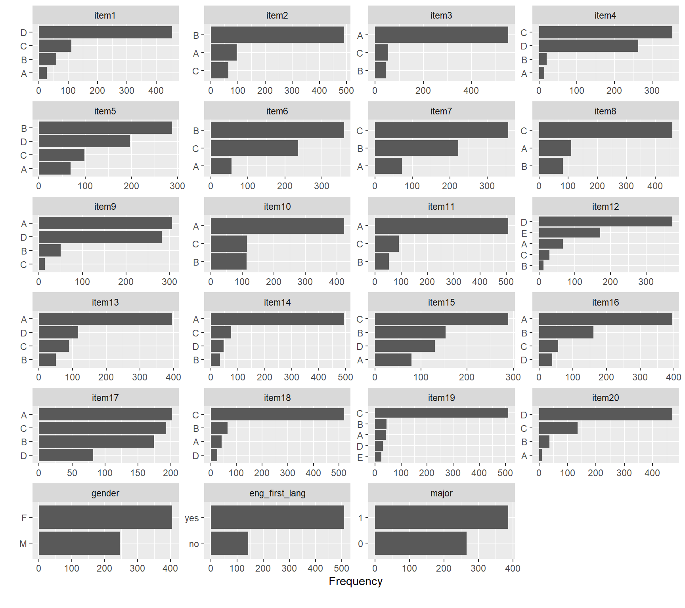
The bar plots above show the distribution of response options for
each item and the number of categories for each categorical variables
(gender, English as the first language, and major). The
plot_bar() function skipped the variable “study_year” since
it is a continuous variable (although it is a continuous variable with a
limited range of 1 to 5). We can plot “study_year” using
plot_histogram().
DataExplorer::plot_histogram(data = hci[, c("study_year")])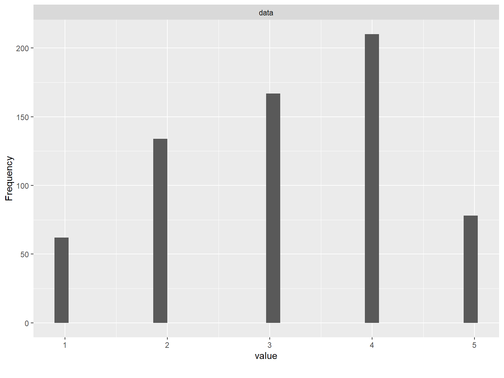
Multiple-choice items typically consist of a correct response option (i.e., keyed option) and a bunch of incorrect response options known as “distractors”. When answering the items, students who know the content adequately are expected to select the keyed option whereas students who have little to no knowledge of the content are expected to select one of the distractors. A distractor may be implausible due to several reasons such as:
To identify such cases and determine whether the distractors are
plausible, we conduct distractor analysis. Distractor analysis refers to
the analysis of response options of multiple-choice items in terms of
their frequency (or proportions). In the following example, we will use
the hci dataset and conduct distractor analysis using different
packages. To run distractor analysis, we need the response data (with
response options of A, B, C, D etc.) and the answer key for the items.
The answer key for the hci dataset is available here (also see
?ShinyItemAnalysis::HCIkey). So, we will import the answer
key into R:
# Import the answer key
key <- read.csv("hci_key.csv", header = TRUE)
# Print the answer key
print(key) key
1 D
2 B
3 A
4 D
5 B
6 C
7 C
8 C
9 D
10 A
11 A
12 D
13 A
14 A
15 C
16 A
17 C
18 C
19 C
20 DNow we will select only the items in the hci dataset and then conduct distractor analysis. Since all the items in the dataset start with “item”, we can use this word to select the items very easily:
hci_items <- dplyr::select(hci, # name of the dataset
starts_with("item")) # variables to be selected
head(hci_items) item1 item2 item3 item4 item5 item6 item7 item8 item9 item10 item11 item12 item13 item14 item15 item16
1 D B A D B B B C D A A D A A D A
2 D B A D B C B C D A A D A A C A
3 D B A D C C B C D A A D A A A A
4 D B A D B C C C D A A D A A C A
5 D B A D B C C C D A A D A A D A
6 D B A D B C C C D A A D A A C A
item17 item18 item19 item20
1 D C C D
2 C C C D
3 C C C D
4 C C C D
5 C C C D
6 C C C DNext, we will use distractorAnalysis() from the
CTT package to conduct distractor analysis:
CTT::distractorAnalysis(items = hci_items, key = key)$item1
correct key n rspP pBis discrim lower mid50 mid75 upper
A A 27 0.04147 -0.2462 -0.09050 0.0905 0.05263 0.005525 0.00000
B B 59 0.09063 -0.1663 -0.05839 0.1176 0.07018 0.093923 0.05926
C C 110 0.16897 -0.4081 -0.28423 0.3213 0.16667 0.082873 0.03704
D * D 455 0.69892 0.2884 0.43312 0.4706 0.71053 0.817680 0.90370
E E 0 0.00000 NA 0.00000 0.0000 0.00000 0.000000 0.00000
$item2
correct key n rspP pBis discrim lower mid50 mid75 upper
A A 96 0.14747 -0.3952 -0.24062 0.2851 0.1140 0.07735 0.04444
B * B 490 0.75269 0.2206 0.32576 0.5928 0.7281 0.83978 0.91852
C C 65 0.09985 -0.1897 -0.08513 0.1222 0.1579 0.08287 0.03704
D D 0 0.00000 NA 0.00000 0.0000 0.0000 0.00000 0.00000
E E 0 0.00000 NA 0.00000 0.0000 0.0000 0.00000 0.00000
$item3
correct key n rspP pBis discrim lower mid50 mid75 upper
A * A 552 0.84793 0.3500 0.3229 0.6697 0.82456 0.97238 0.992593
B B 45 0.06912 -0.3794 -0.1584 0.1584 0.07018 0.01105 0.000000
C C 54 0.08295 -0.3411 -0.1645 0.1719 0.10526 0.01657 0.007407
D D 0 0.00000 NA 0.0000 0.0000 0.00000 0.00000 0.000000
E E 0 0.00000 NA 0.0000 0.0000 0.00000 0.00000 0.000000
$item4
correct key n rspP pBis discrim lower mid50 mid75 upper
A A 14 0.02151 -0.2472 -0.05882 0.05882 0.008772 0.000000 0.0000
B B 20 0.03072 -0.2653 -0.08145 0.08145 0.008772 0.005525 0.0000
C C 354 0.54378 -0.2884 -0.28493 0.61086 0.596491 0.591160 0.3259
D * D 263 0.40399 0.1730 0.42521 0.24887 0.385965 0.403315 0.6741
E E 0 0.00000 NA 0.00000 0.00000 0.000000 0.000000 0.0000
$item5
correct key n rspP pBis discrim lower mid50 mid75 upper
A A 68 0.1045 -0.2275 -0.1123 0.1493 0.1228 0.0884 0.03704
B * B 288 0.4424 0.2768 0.5297 0.2036 0.4649 0.5028 0.73333
C C 98 0.1505 -0.2614 -0.1118 0.2081 0.1579 0.1160 0.09630
D D 197 0.3026 -0.3196 -0.3056 0.4389 0.2544 0.2928 0.13333
E E 0 0.0000 NA 0.0000 0.0000 0.0000 0.0000 0.00000
$item6
correct key n rspP pBis discrim lower mid50 mid75 upper
A A 56 0.08602 -0.3026 -0.1464 0.1538 0.1316 0.03315 0.007407
B B 359 0.55146 -0.4253 -0.4055 0.7240 0.6228 0.46961 0.318519
C * C 236 0.36252 0.3419 0.5519 0.1222 0.2456 0.49724 0.674074
D D 0 0.00000 NA 0.0000 0.0000 0.0000 0.00000 0.000000
E E 0 0.00000 NA 0.0000 0.0000 0.0000 0.00000 0.000000
$item7
correct key n rspP pBis discrim lower mid50 mid75 upper
A A 72 0.1106 -0.2413 -0.1242 0.1538 0.1140 0.1160 0.02963
B B 223 0.3425 -0.2652 -0.1583 0.4027 0.3947 0.3094 0.24444
C * C 356 0.5469 0.1009 0.2825 0.4434 0.4912 0.5746 0.72593
D D 0 0.0000 NA 0.0000 0.0000 0.0000 0.0000 0.00000
E E 0 0.0000 NA 0.0000 0.0000 0.0000 0.0000 0.00000
$item8
correct key n rspP pBis discrim lower mid50 mid75 upper
A A 110 0.1690 -0.3799 -0.2871 0.3167 0.1667 0.09392 0.02963
B B 82 0.1260 -0.3516 -0.1995 0.2217 0.1404 0.07735 0.02222
C * C 459 0.7051 0.3252 0.4866 0.4615 0.6930 0.82873 0.94815
D D 0 0.0000 NA 0.0000 0.0000 0.0000 0.00000 0.00000
E E 0 0.0000 NA 0.0000 0.0000 0.0000 0.00000 0.00000
$item9
correct key n rspP pBis discrim lower mid50 mid75 upper
A A 306 0.47005 -0.3031 -0.30719 0.52941 0.52632 0.54696 0.22222
B B 50 0.07680 -0.2709 -0.09583 0.14027 0.05263 0.03867 0.04444
C C 13 0.01997 -0.2321 -0.05882 0.05882 0.00000 0.00000 0.00000
D * D 282 0.43318 0.2130 0.46184 0.27149 0.42105 0.41436 0.73333
E E 0 0.00000 NA 0.00000 0.00000 0.00000 0.00000 0.00000
$item10
correct key n rspP pBis discrim lower mid50 mid75 upper
A * A 422 0.6482 0.2644 0.4915 0.4344 0.5702 0.7514 0.92593
B B 114 0.1751 -0.3274 -0.2464 0.2760 0.2018 0.1436 0.02963
C C 115 0.1767 -0.3437 -0.2451 0.2896 0.2281 0.1050 0.04444
D D 0 0.0000 NA 0.0000 0.0000 0.0000 0.0000 0.00000
E E 0 0.0000 NA 0.0000 0.0000 0.0000 0.0000 0.00000
$item11
correct key n rspP pBis discrim lower mid50 mid75 upper
A * A 507 0.77880 0.2851 0.3583 0.5973 0.75439 0.88398 0.95556
B B 53 0.08141 -0.3704 -0.1765 0.1765 0.07018 0.03315 0.00000
C C 91 0.13978 -0.3118 -0.1818 0.2262 0.17544 0.08287 0.04444
D D 0 0.00000 NA 0.0000 0.0000 0.00000 0.00000 0.00000
E E 0 0.00000 NA 0.0000 0.0000 0.00000 0.00000 0.00000
$item12
correct key n rspP pBis discrim lower mid50 mid75 upper
A A 66 0.10138 -0.2709 -0.14067 0.16290 0.131579 0.06630 0.02222
B B 12 0.01843 -0.1479 -0.01686 0.03167 0.008772 0.01105 0.01481
C C 29 0.04455 -0.2144 -0.07240 0.07240 0.061404 0.03315 0.00000
D * D 373 0.57296 0.3156 0.53759 0.34389 0.482456 0.67956 0.88148
E E 171 0.26267 -0.3558 -0.30766 0.38914 0.315789 0.20994 0.08148
$item13
correct key n rspP pBis discrim lower mid50 mid75 upper
A * A 396 0.6083 0.3612 0.5878 0.3529 0.44737 0.77348 0.940741
B B 50 0.0768 -0.2923 -0.1374 0.1448 0.08772 0.03867 0.007407
C C 89 0.1367 -0.3358 -0.2057 0.2353 0.19298 0.06077 0.029630
D D 116 0.1782 -0.3207 -0.2447 0.2670 0.27193 0.12707 0.022222
E E 0 0.0000 NA 0.0000 0.0000 0.00000 0.00000 0.000000
$item14
correct key n rspP pBis discrim lower mid50 mid75 upper
A * A 494 0.75883 0.3386 0.43808 0.52489 0.74561 0.90055 0.96296
B B 34 0.05223 -0.2222 -0.07116 0.08597 0.09649 0.01105 0.01481
C C 76 0.11674 -0.3162 -0.19950 0.22172 0.11404 0.06077 0.02222
D D 47 0.07220 -0.3581 -0.16742 0.16742 0.04386 0.02762 0.00000
E E 0 0.00000 NA 0.00000 0.00000 0.00000 0.00000 0.00000
$item15
correct key n rspP pBis discrim lower mid50 mid75 upper
A A 79 0.1214 -0.2416 -0.12214 0.2036 0.08772 0.07182 0.08148
B B 153 0.2350 -0.4241 -0.34758 0.3846 0.32456 0.14365 0.03704
C * C 289 0.4439 0.3006 0.56347 0.2217 0.33333 0.53039 0.78519
D D 130 0.1997 -0.1594 -0.09375 0.1900 0.25439 0.25414 0.09630
E E 0 0.0000 NA 0.00000 0.0000 0.00000 0.00000 0.00000
$item16
correct key n rspP pBis discrim lower mid50 mid75 upper
A * A 395 0.60676 0.3822 0.58079 0.33032 0.55263 0.75138 0.91111
B B 161 0.24731 -0.4453 -0.38089 0.42534 0.28947 0.15470 0.04444
C C 56 0.08602 -0.3214 -0.15261 0.16742 0.08772 0.03867 0.01481
D D 39 0.05991 -0.1517 -0.04729 0.07692 0.07018 0.05525 0.02963
E E 0 0.00000 NA 0.00000 0.00000 0.00000 0.00000 0.00000
$item17
correct key n rspP pBis discrim lower mid50 mid75 upper
A A 202 0.3103 -0.09021 0.02809 0.2534 0.3684 0.3646 0.28148
B B 174 0.2673 -0.29347 -0.22289 0.3710 0.1930 0.2762 0.14815
C * C 193 0.2965 0.04340 0.24290 0.2534 0.2456 0.2320 0.49630
D D 82 0.1260 -0.13266 -0.04810 0.1222 0.1930 0.1271 0.07407
E E 0 0.0000 NA 0.00000 0.0000 0.0000 0.0000 0.00000
$item18
correct key n rspP pBis discrim lower mid50 mid75 upper
A A 42 0.06452 -0.3141 -0.12834 0.13575 0.05263 0.02762 0.007407
B B 65 0.09985 -0.4090 -0.21307 0.23529 0.07018 0.01105 0.022222
C * C 519 0.79724 0.4171 0.42738 0.54299 0.84211 0.95028 0.970370
D D 25 0.03840 -0.2569 -0.08597 0.08597 0.03509 0.01105 0.000000
E E 0 0.00000 NA 0.00000 0.00000 0.00000 0.00000 0.000000
$item19
correct key n rspP pBis discrim lower mid50 mid75 upper
A A 41 0.06298 -0.2840 -0.11024 0.11765 0.07018 0.03315 0.007407
B B 44 0.06759 -0.3303 -0.13451 0.14932 0.05263 0.01657 0.014815
C * C 511 0.78495 0.3665 0.41833 0.55204 0.80702 0.91713 0.970370
D D 30 0.04608 -0.2014 -0.07857 0.08597 0.05263 0.02210 0.007407
E E 25 0.03840 -0.2484 -0.09502 0.09502 0.01754 0.01105 0.000000
$item20
correct key n rspP pBis discrim lower mid50 mid75 upper
A A 10 0.01536 -0.1639 -0.04072 0.04072 0.008772 0.00000 0.00000
B B 36 0.05530 -0.3383 -0.13575 0.13575 0.026316 0.01657 0.00000
C C 135 0.20737 -0.3909 -0.28916 0.34842 0.219298 0.13812 0.05926
D * D 470 0.72197 0.3396 0.46563 0.47511 0.745614 0.84530 0.94074
E E 0 0.00000 NA 0.00000 0.00000 0.000000 0.00000 0.00000In the output, we see the keyed option for each item (shown with *), the number of students who selected each response option (n), the proportion of students who selected each response option (rspP), point-biserial correlation between the response option and the total score with the item removed (pBis), discrimination of the response option calculated as the upper proportion minus the lower proportion (discrim), proportion of students from the lowest score group choosing the response option (lower), and proportion of students from the highest score group choosing the response option (higher). We expect most students from the mid75 and upper groups to choose the keyed option. For example, in item 1, nearly 70% of the students selected the keyed option of D. We see that the proportion of students answering the item correctly is increasing as we move from the lower group (43%) to the upper group (90%). The opposite trend seems to occur for the distractors (i.e., A, B, and C).
We can also go over the items one by one and identify if there are any items where distractors did not seem to attract enough students. For example, in item 20, two distractors (A and B) were only selected by 1.5% and 5.5% of the students, respectively. Most students either selected the keyed option of D or option C as one of the distractors. The distractors of this particular item should be examined to increase the plausibility of the first two distractors. A similar issue is happening with item 18 where only 3.8% of the students selected option D and item 12 where only 1.8% of the students selected option B. We also see that for all of the items, the distractors have negative pBis and discrim values whereas the keyed options have positive values for the same indices, suggesting that the items function properly.
distractorAnalysis() calculates the total score for each
student by comparing the responses to the answer key and uses the total
score to split students into four groups (lower, mid50, mid75, upper).
If we wanted to increase or decrease the number of groups, we could use
the nGroups argument in distractorAnalysis()
(e.g., nGroups = 6 to run the analysis with 6 groups based
on the total score). Alternatively, we could use the
defineGroups argument to define the quantile breakpoints
for groups based on the total score (e.g.,
defineGroups = c(.25,.50,.25) to request three groups with
25% of the students in the top and the bottom groups and the remaining
50% in the middle group). In addition, we can save the distractor
analysis results into a comma-separated-values (csv) file by using the
csvReport argument in distractorAnalysis()
(e.g., csvReport = "hci_distactors.csv")
In addition to distractorAnalysis() from the
CTT package, we can also use the analyze()
from the QME package to conduct distractor analysis and
obtain nice visualizations of each item and its response options. The
QME package requires the answer key to be set up in a
certain way (either a vector or a full data frame). In the hci dataset,
some items have only three response options (A, B, or C), whereas the
others have 4 (A, B, C, or D) or 5 (A, B, C, D, and E) response options.
For this type of dataset, the data frame answer key is the ideal option.
You can find the reconfigured answer key for the hci dataset here. We will
import the new answer key into R, conduct item analysis using
analyze(), and use the outcome of this analysis in
distractor_report() to obtain a distractor report for the
hci items.
# Import the new answer key
key2 <- read.csv("hci_key2.csv" , header = TRUE)
# View the new answer key
print(key2)
# Conduct analysis with analyze() and save the results
hci_analysis <- QME::analyze(test = hci_items, key = key2, id = FALSE)
# Create a distractor report
QME::distractor_report(x = hci_analysis)The report returned from distractor_report() is quite
long. So, we will only have a look at the output from a sample item
(item 1) below.
### Details for `item1`
|Choice | Key| Proportions| Response Discrimination|
|:------|---:|-----------:|-----------------------:|
|A | 0| 0.04| -0.23|
|B | 0| 0.09| -0.09|
|C | 0| 0.17| -0.29|
|D | 1| 0.70| 0.29|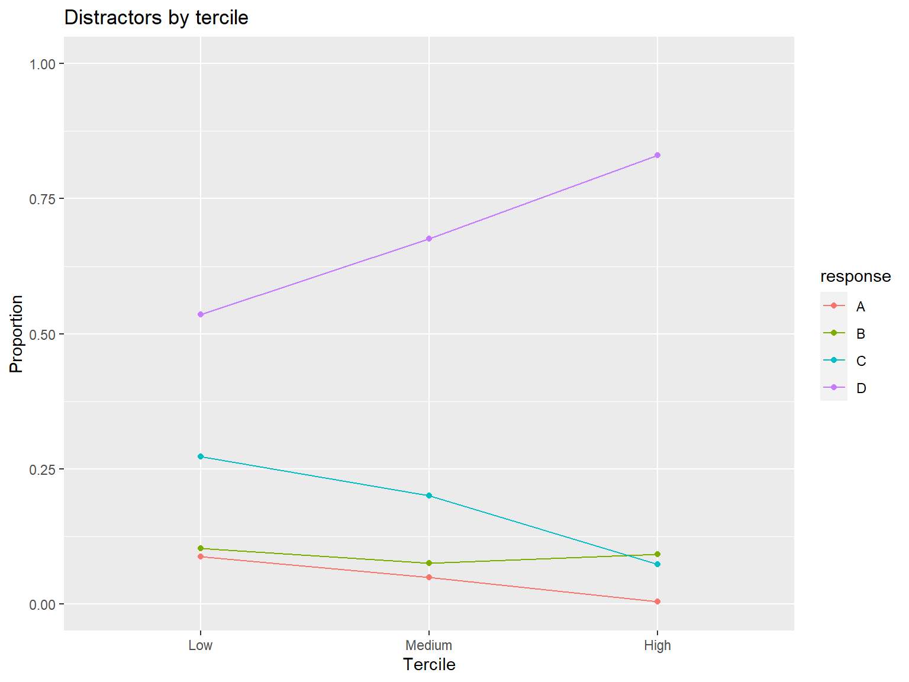
The table shows us the the response options (choice), the answer key (where it is “1”), proportions of students selecting each response option (proportions), and discrimination values for the response options (response discrimination). We also see similar results in the figure above but the proportions of students for each response option are split into three groups (i.e., tercile): low, medium, and high. Tercile refers to three groups where each contains a third of the total sample. The figure shows that as we move from the low to high group, the proportions of students selecting the keyed answer (D) is increasing, whereas the proportions of students selecting the distractors (A, B, or C) are decreasing. This finding suggests that the response options of item 1 function as expected.
Lastly, if we are interested in creating a distractor functioning
figure (similar to the one from the QME package) for a
specific item, plotDistractorAnalysis() from the
ShinyItemAnalysis package is a better option due to its
ease of use. To use this function, we will save the answer key as a
vector (called “key3” this time). The function uses the raw responses
(Data = hci_items), the answer key
(key = key3), the number of groups to create based on the
total score (num.groups = 3), and the item to be plotted
(item = 1). There are also additional arguments to
customize the function, such as criterion to specify an
external score variable instead of calculating the total score and
cut.points to specify what cut-off points should be used to
create the groups according to num.groups (see
?ShinyItemAnalysis::plotDistractorAnalysis for further
details).
# Save the key column from the key data frame as a vector
key3 <- as.vector(key$key)
ShinyItemAnalysis::plotDistractorAnalysis(Data = hci_items, # response data to be analyzed
key = key3, # answer key
num.groups = 3, # how many student groups we want (default is 3)
item = 1) # the number of the item to be plotted$item1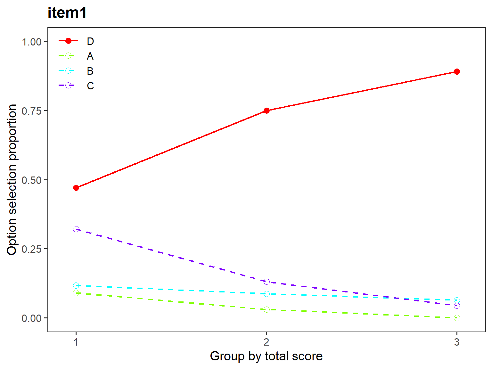
The plot returned from plotDistractorAnalysis() is very
similar to the one from distractor_report() although they
are not necessarily identical due to the way student groups are created
by the QME and ShinyItemAnalysis
packages.
To conduct further analysis with the items in the hci dataset, we
need to transform raw responses (i.e., A, B, C, D, and E) to item scores
(i.e., 1 for correct and 0 for incorrect). This procedure is called
“scoring”. To score the items the hci datasets, we could write a custom
scoring function that compares the responses to a given item to the
answer key and scores the item dichotomously (i.e., 1 or 0). Then, we
would have to apply this function to the entire dataset using a loop
(i.e., repeating the process across items and/or students). Luckily, the
CTT package already includes a score()
function that calculates item scores, finds the sum of the item scores
(i.e., total scores), and computes coefficient alpha in a single
analysis. The score() function requires the answer key to
be a vector instead of a data frame. So, we will first save the answer
key as a vector (called “key3” this time) and then score the items using
the answer key.
# Score the items
hci_scored <- CTT::score(items = hci_items, # data to be scored
key = key3, # answer key
output.scored = TRUE, # save the scored items
rel = TRUE) # calculate reliability for the scored items
# Now let's see what's in hci_scored
str(hci_scored)List of 3
$ score : Named num [1:651] 16 19 17 20 19 20 20 14 18 17 ...
..- attr(*, "names")= chr [1:651] "P1" "P2" "P3" "P4" ...
$ reliability:List of 9
..$ nItem : int 20
..$ nPerson : int 651
..$ alpha : num 0.715
..$ scaleMean : num 12.2
..$ scaleSD : num 3.64
..$ alphaIfDeleted: num [1:20(1d)] 0.704 0.71 0.701 0.715 0.705 ...
..$ pBis : num [1:20(1d)] 0.288 0.221 0.35 0.173 0.277 ...
..$ bis : num [1:20(1d)] 0.37 0.295 0.525 0.218 0.344 ...
..$ itemMean : Named num [1:20] 0.699 0.753 0.848 0.404 0.442 ...
.. ..- attr(*, "names")= chr [1:20] "item1" "item2" "item3" "item4" ...
..- attr(*, "class")= chr "reliability"
$ scored : num [1:651, 1:20] 1 1 1 1 1 1 1 0 1 1 ...
..- attr(*, "dimnames")=List of 2
.. ..$ : NULL
.. ..$ : chr [1:20] "item1" "item2" "item3" "item4" ...The structure of hci_scored shows that we have three
sets of information in this object:
score shows the total scores of the students based on
the scored itemsreliability shows the internal consistency of the
scored hci itemsscored shows the scored hci itemsNow, let’s take a look at each part one by one. First, we will begin with the total scores. We will save the scores as a separate dataset and then analyze it descriptively and visually.
# Save the scores as a separate variable
scores <- hci_scored$score
# Summarize the scores
summary(scores) Min. 1st Qu. Median Mean 3rd Qu. Max.
3.0 10.0 12.0 12.2 15.0 20.0 # Visualize the distribution of the scores using a histogram
# We will also customize the histogram a little bit
hist(x = scores, # scores to be visualized
xlab = "Total Score", # label for the x axis
main = "Distribution of HCI Total Scores", # title for the plot
col = "lightblue", # colour for the bars in the histogram
breaks = 15, # number of breakpoints for the histogram
xlim = c(0, 20)) # minimum and maximum values for the x axis
# Add a red, vertical line showing the mean
abline(v = mean(scores), col = "red", lwd = 2, lty = 2)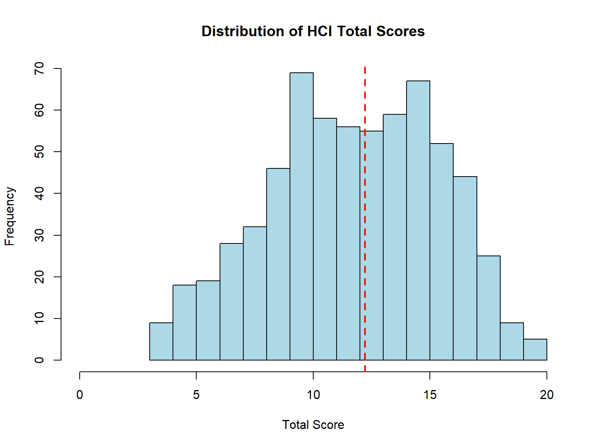
Second, we will check out the reliability information.
# Print reliability
print(hci_scored$reliability)
Number of Items
20
Number of Examinees
651
Coefficient Alpha
0.715 Lastly, we will see the scored versions of the items in the hci dataset:
# Save the scored items
hci_items_scored <- hci_scored$scored
# Print the first six rows of this dataset
head(hci_items_scored) item1 item2 item3 item4 item5 item6 item7 item8 item9 item10 item11 item12 item13 item14 item15 item16
[1,] 1 1 1 1 1 0 0 1 1 1 1 1 1 1 0 1
[2,] 1 1 1 1 1 1 0 1 1 1 1 1 1 1 1 1
[3,] 1 1 1 1 0 1 0 1 1 1 1 1 1 1 0 1
[4,] 1 1 1 1 1 1 1 1 1 1 1 1 1 1 1 1
[5,] 1 1 1 1 1 1 1 1 1 1 1 1 1 1 0 1
[6,] 1 1 1 1 1 1 1 1 1 1 1 1 1 1 1 1
item17 item18 item19 item20
[1,] 0 1 1 1
[2,] 1 1 1 1
[3,] 1 1 1 1
[4,] 1 1 1 1
[5,] 1 1 1 1
[6,] 1 1 1 1Assume that we want to rescale the total scores (out of 20) to have a
mean of 50 and standard deviation of 10 (just like T-scores). To
accomplish such transformation, we can use
score.transform() from the CTT package. In
the following example, we will rescale the total scores from the hci
dataset and then draw a histogram of the scaled scores.
scores_scaled <- CTT::score.transform(scores = scores, # scores to be rescaled
mu.new = 50, # mean of the new scale
sd.new = 15) # standard deviation of the new scale
# Visualize the distribution of the scaled scores using a histogram
hist(x = scores_scaled$new.scores,
xlab = "Scaled Score",
main = "Distribution of HCI Scaled Scores",
col = "lightblue",
xlim = c(0, 100))
# Add a red, vertical line showing the mean
abline(v = mean(scores_scaled$new.scores), col = "red", lwd = 2, lty = 2)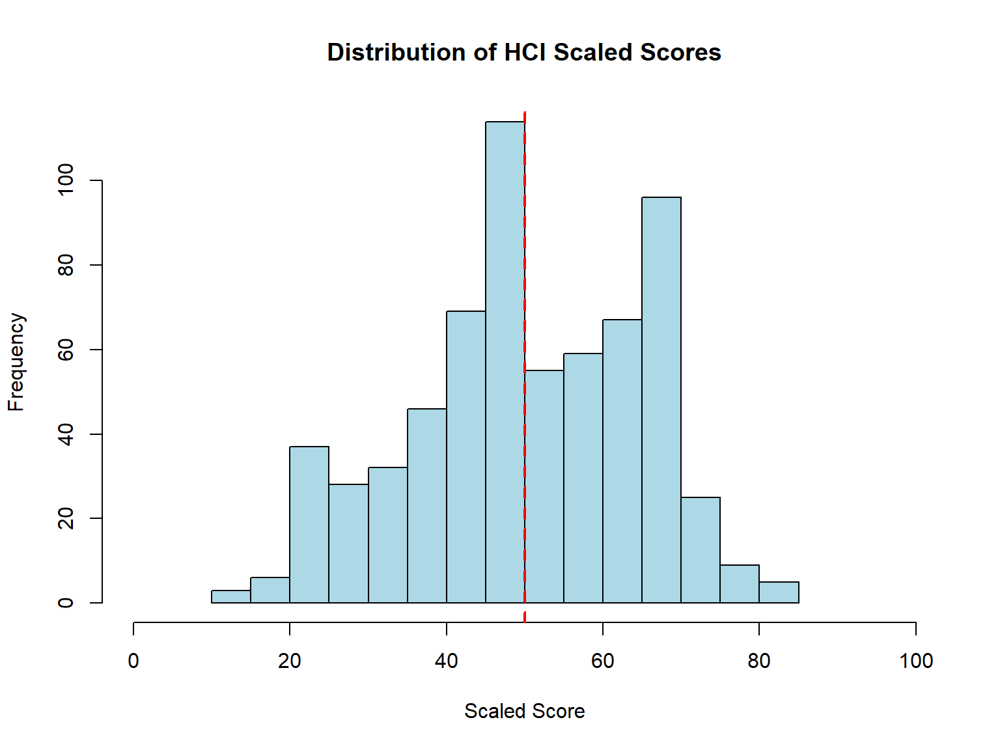
We can also force the scores to follow a normal distribution using
the normalize argument:
scores_scaled2 <- CTT::score.transform(scores = scores, # scores to be rescaled
mu.new = 50, # mean of the new scale
sd.new = 15, # standard deviation of the new scale
normalize = TRUE) # If TRUE, normalize the scores
# Visualize the distribution of the normalized scaled scores using a histogram
hist(x = scores_scaled2$new.scores,
xlab = "Normalized Scaled Score",
main = "Distribution of HCI Scaled Scores",
col = "lightblue",
xlim = c(0, 100))
# Add a red, vertical line showing the mean
abline(v = mean(scores_scaled2$new.scores), col = "red", lwd = 2, lty = 2)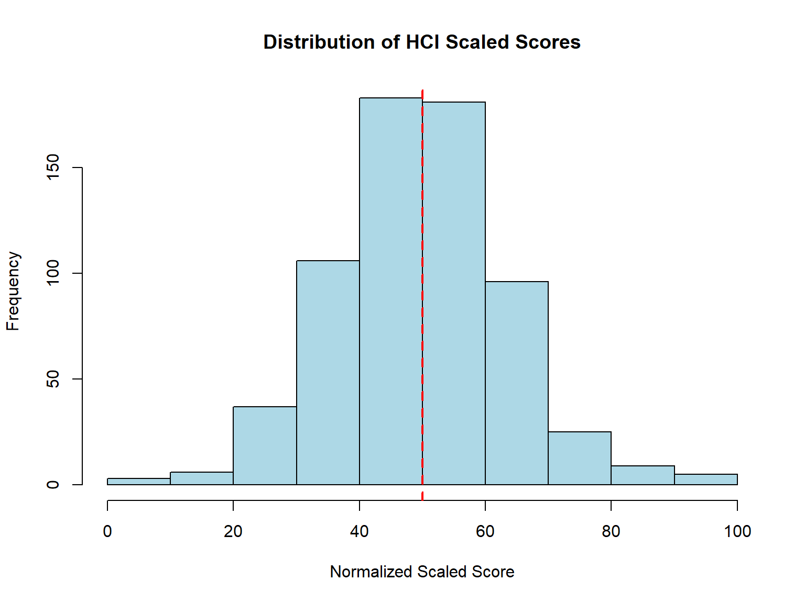
Now that we have the scored item responses, we will go ahead and
conduct item analysis for the hci dataset. First, we will check out the
correlations among the items using tetrachoric() function
from the psych package (note that we must use
tetrachoric correlations given that our items are dichotomously scored)
and then visualize the correlations using ggcorrplot().
cormat_hci <- psych::tetrachoric(x = hci_items_scored)$rhoggcorrplot::ggcorrplot(corr = cormat_hci,
type = "lower",
show.diag = TRUE,
lab = TRUE,
lab_size = 3) 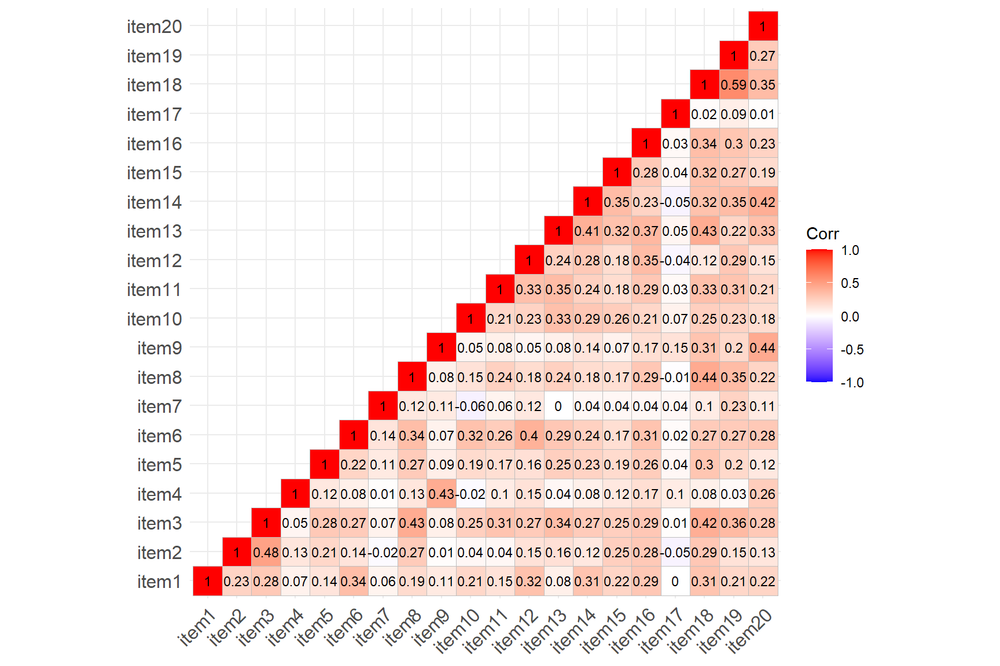
The correlation matrix plot shows that there are several problematic
items in the dataset, such as items 7 and 17. Next, we will use the
itemAnalysis() function from the CTT
package to run a more detailed item analysis for the scored hci
dataset.
# Run the item analysis and save it as hci_itemanalysis
hci_itemanalysis <- CTT::itemAnalysis(items = hci_items_scored, pBisFlag = .2, bisFlag = .2)
# Print the reliability
hci_itemanalysis
Number of Items
20
Number of Examinees
651
Coefficient Alpha
0.715 # Print the item report
hci_itemanalysis$itemReport itemName itemMean pBis bis alphaIfDeleted lowPBis lowBis
1 item1 0.6989 0.2884 0.37991 0.7042
2 item2 0.7527 0.2206 0.30126 0.7099
3 item3 0.8479 0.3500 0.53420 0.7007
4 item4 0.4040 0.1730 0.21915 0.7151 X
5 item5 0.4424 0.2768 0.34822 0.7054
6 item6 0.3625 0.3419 0.43826 0.6991
7 item7 0.5469 0.1009 0.12683 0.7220 X X
8 item8 0.7051 0.3252 0.42986 0.7009
9 item9 0.4332 0.2130 0.26829 0.7114
10 item10 0.6482 0.2644 0.34019 0.7064
11 item11 0.7788 0.2851 0.39842 0.7047
12 item12 0.5730 0.3156 0.39798 0.7016
13 item13 0.6083 0.3612 0.45899 0.6972
14 item14 0.7588 0.3386 0.46466 0.7001
15 item15 0.4439 0.3006 0.37807 0.7030
16 item16 0.6068 0.3822 0.48549 0.6952
17 item17 0.2965 0.0434 0.05732 0.7253 X X
18 item18 0.7972 0.4171 0.59413 0.6943
19 item19 0.7849 0.3665 0.51528 0.6981
20 item20 0.7220 0.3396 0.45348 0.6997 The results of our item analysis show that the internal consistency of the hci items is around 0.72 (not good enough for a summative assessment) and that three items (items 4, 7, and 17) have been flagged for showing low discrimination. We can see that item 17 is a very difficult item (\(p = 0.29\)) and both items7 and 17 have low discrimination. We can remove these two items from the test and rerun the item analysis:
# Run the item analysis and save it as hci_itemanalysis2
hci_itemanalysis2 <- CTT::itemAnalysis(items = hci_items_scored[, -c(7, 17)],
pBisFlag = .2,
bisFlag = .2)
# Print the reliability
hci_itemanalysis2
Number of Items
18
Number of Examinees
651
Coefficient Alpha
0.733 # Print the item report
hci_itemanalysis2$itemReport itemName itemMean pBis bis alphaIfDeleted lowPBis lowBis
1 item1 0.6989 0.2949 0.3884 0.7228
2 item2 0.7527 0.2352 0.3212 0.7278
3 item3 0.8479 0.3585 0.5471 0.7188
4 item4 0.4040 0.1703 0.2158 0.7347 X
5 item5 0.4424 0.2737 0.3444 0.7251
6 item6 0.3625 0.3402 0.4361 0.7187
7 item8 0.7051 0.3283 0.4340 0.7198
8 item9 0.4332 0.1987 0.2504 0.7322 X
9 item10 0.6482 0.2752 0.3541 0.7247
10 item11 0.7788 0.2895 0.4045 0.7233
11 item12 0.5730 0.3206 0.4043 0.7205
12 item13 0.6083 0.3716 0.4721 0.7156
13 item14 0.7588 0.3534 0.4850 0.7179
14 item15 0.4439 0.3061 0.3850 0.7220
15 item16 0.6068 0.3917 0.4975 0.7136
16 item18 0.7972 0.4246 0.6048 0.7126
17 item19 0.7849 0.3548 0.4988 0.7180
18 item20 0.7220 0.3423 0.4572 0.7186 The updated item analysis results show that the internal consistency of the hci test increased to 0.73 (still not good but slightly better than the previous value). Although items 4 and 9 have been flagged for showing low point-biserial correlations, their pBis values are not too low. So, we can retain the remaining items on the test but remember that the overall internal consistency of this test is not sufficient for making summative evaluations or high-stakes decisions.
An important test-level statistic for educational assessments is the standard error of measurement (SEM), which can be calculated as follows:
\[SEM = \sigma \sqrt{(1-r_{xx})},\] where \(\sigma\) is the standard deviation of the test scores and \(r_{xx}\) is the reliability of the test. In practice, SEM is often used to create a confidence interval around observed test scores scores. Calculating such confidence intervals allows us to capture the variability around the observe score and thereby explain where the true score corresponding to the observe score would be roughly located (with a certain level of confidence).
To calculate SEM and confidence intervals, we will create a custom
function that takes the item response data as an input and returns SEM
as well as confidence intervals for the total score. in the function, we
can specify the level of confidence we want (e.g.,
ci.level = 0.95 for 95% confidence intervals). The function
reports SEM, coefficient alpha, and the formula to calculate confidence
intervals. Also, it returns observed (raw) scores and their lower and
upper confidence intervals as a data frame.
# x is the response data
# ci.level is the confidence level we want
sem.ctt <- function(x, ci.level = 0.95) {
require("CTT")
rxx <- CTT::itemAnalysis(items = x)$alpha
scores <- rowSums(x, na.rm = TRUE)
sigma <- sd(scores, na.rm = TRUE)
sem <- sigma*sqrt((1-rxx))
z <- qnorm(1-(1-ci.level)/2)
cat("****************************************************","\n")
cat("","\n")
cat(sprintf("%40s","Standard Error of Measurement"),"\n")
cat("","\n")
cat("****************************************************","\n")
cat("","\n")
cat("Coefficient alpha = ", rxx, "\n")
cat("","\n")
cat("Standard deviation = ", sigma, "\n")
cat("","\n")
cat("SEM = ", sem, "\n")
cat("","\n")
cat("To calculate confidence intervals with SEM, use:", "\n")
cat("","\n")
cat("Observed Score ± (", sem, "*", z, ")", "\n")
cat("","\n")
output <- data.frame(lower_CI = scores - (sem*z),
observed = scores,
upper_CI = scores + (sem*z))
return(output)
}
# Calculate SEM
sem_hci <- sem.ctt(x = hci_items_scored, ci.level = 0.95)****************************************************
Standard Error of Measurement
****************************************************
Coefficient alpha = 0.7155
Standard deviation = 3.64
SEM = 1.942
To calculate confidence intervals with SEM, use:
Observed Score ± ( 1.942 * 1.96 )
# See observed scores and their lower/upper confidence intervals
head(sem_hci) lower_CI observed upper_CI
1 12.19 16 19.81
2 15.19 19 22.81
3 13.19 17 20.81
4 16.19 20 23.81
5 15.19 19 22.81
6 16.19 20 23.81Differential item functioning (DIF) is used in educational and psychological assessments to detect item-level bias. DIF occurs due to a conditional dependency between group membership of examinees (e.g., female vs. male) and item performance after controlling for the latent trait. As a result of DIF, a biased item provides either a constant advantage for a particular group (uniform DIF) or an advantage varying in magnitude and/or in direction across the latent trait continuum (nonuniform DIF). In the context of DIF, the focal group refers to the examinees who are suspected to be at a disadvantage compared to the examinees from the reference group when responding to the items on the test. If an item exhibits “uniform DIF”, then the performance of the focal group tends to be constantly worse than the performance of the reference group along the latent trait continuum. If the item exhibits “nonuniform DIF”, the difference between the focal and reference groups would not necessarily have a single direction.
The difR package (Magis et al., 2010) provides access to several methods for detecting dichotomous items exhibiting DIF. In the following example, we will use the Mantel-Haenszel (MH) and logistic regression methods to analyze the scored hci items in terms of DIF. We will use “gender” and “eng_first_lang” as group variables to identify the hci items that exhibit DIF based on gender or speaking English as a first language. To facilitate DIF analyses we will run in this part, I saved the scored items, gender, and eng_first_lang as hci_scored.csv. In addition, the R codes for the DIF analyses presented here are available here.
Now, let’s go head and import the data into R.
# Import the dataset
hci_scored <- read.csv("hci_scored.csv", header = TRUE)
# Print the first 6 rows of the dataset
head(hci_scored) item1 item2 item3 item4 item5 item6 item7 item8 item9 item10 item11 item12 item13 item14 item15 item16
1 1 1 1 1 1 0 0 1 1 1 1 1 1 1 0 1
2 1 1 1 1 1 1 0 1 1 1 1 1 1 1 1 1
3 1 1 1 1 0 1 0 1 1 1 1 1 1 1 0 1
4 1 1 1 1 1 1 1 1 1 1 1 1 1 1 1 1
5 1 1 1 1 1 1 1 1 1 1 1 1 1 1 0 1
6 1 1 1 1 1 1 1 1 1 1 1 1 1 1 1 1
item17 item18 item19 item20 gender eng_first_lang
1 0 1 1 1 F yes
2 1 1 1 1 F yes
3 1 1 1 1 M yes
4 1 1 1 1 M yes
5 1 1 1 1 M yes
6 1 1 1 1 F yesNext, we will check the number of female/male students and students whose first language is English (or not).
# How many male and female students?
table(hci_scored$gender)
F M
405 246 # How many students whose first language is English?
table(hci_scored$eng_first_lang)
no yes
143 508 In the following part, we will run DIF analysis to detect items with DIF based on gender and language. We will use female students as the focal group in gender-based DIF analysis and use students whose first language is not English as the focal group in language-based DIF analysis. Please note that males/those who speak English as their first language as the focal group would not change the results.
We will begin with the Mantel-Haenszel (MH) DIF method. The
difMH() function from the difR package
allows us to run the MF DIF method and detect items exhibiting DIF. The
function automatically calculates the total scores based on the response
data and use these scores to match the students based on their ability
levels when performing the MH test. However, we can also calculate the
total scores prior to DIF analysis and use it as the matching
variable.
Before we begin the analysis, let’s save the items in hci_scored, gender, and eng_first_lang as separate datasets.
# We will save the items, gender, and language as separate datasets
hci_items <- dplyr::select(hci_scored, starts_with("item"))
gender <- hci_scored$gender
language <- hci_scored$eng_first_langNow, let’s go ahead and run DIF analysis using the MH method for
gender and language. In the following example, we specify the items to
be tested for DIF (Data = hci_items), the group variable
(group = gender), the group (female) to be used as the
focal group (focal.name = "F"), and the matching variable
(match = "score") which automatically calculates the total
scores based on item responses (if we already have the total scores in
the data, then we can specify a variable name in the data for total test
scores). Also, we set purify = TRUE to run iterative
purification when conducting DIF analysis. With purification, items with
DIF are excluded from the calculation of the matching variable (i.e.,
total scores) and the analysis is rerun with clean items until no
further DIF items are detected.
# 1) Run the DIF analysis based on gender
gender_MH <- difR::difMH(Data = hci_items, # response data
group = gender, # group variable
focal.name = "F", # F for female students
match = "score", # matching variable
purify = TRUE) # if TRUE, purification is used
# Print the results
print(gender_MH)
Detection of Differential Item Functioning using Mantel-Haenszel method
with continuity correction and with item purification
Results based on asymptotic inference
Convergence reached after 2 iterations
Matching variable: test score
No set of anchor items was provided
No p-value adjustment for multiple comparisons
Mantel-Haenszel Chi-square statistic:
Stat. P-value
item1 5.1837 0.0228 *
item2 0.1790 0.6722
item3 0.0524 0.8189
item4 3.0679 0.0799 .
item5 0.4067 0.5237
item6 1.3774 0.2405
item7 0.2183 0.6403
item8 0.2457 0.6201
item9 1.6002 0.2059
item10 0.3804 0.5374
item11 0.0826 0.7738
item12 3.4527 0.0631 .
item13 0.0000 0.9948
item14 0.0000 0.9986
item15 0.2856 0.5931
item16 0.6194 0.4313
item17 0.0035 0.9529
item18 0.0081 0.9283
item19 5.1109 0.0238 *
item20 0.0161 0.8990
Signif. codes: 0 '***' 0.001 '**' 0.01 '*' 0.05 '.' 0.1 ' ' 1
Detection threshold: 3.841 (significance level: 0.05)
Items detected as DIF items:
item1
item19
Effect size (ETS Delta scale):
Effect size code:
'A': negligible effect
'B': moderate effect
'C': large effect
alphaMH deltaMH
item1 0.6308 1.0827 B
item2 1.1173 -0.2606 A
item3 0.9044 0.2361 A
item4 0.7122 0.7975 A
item5 1.1387 -0.3053 A
item6 1.2749 -0.5708 A
item7 1.1015 -0.2272 A
item8 1.1325 -0.2924 A
item9 1.2767 -0.5741 A
item10 1.1484 -0.3252 A
item11 0.9152 0.2082 A
item12 0.6904 0.8706 A
item13 1.0213 -0.0496 A
item14 0.9757 0.0578 A
item15 0.8905 0.2725 A
item16 0.8404 0.4087 A
item17 1.0064 -0.0149 A
item18 0.9906 0.0223 A
item19 0.5729 1.3091 B
item20 1.0515 -0.1181 A
Effect size codes: 0 'A' 1.0 'B' 1.5 'C'
(for absolute values of 'deltaMH')
Output was not captured! # Visualize the results
plot(gender_MH)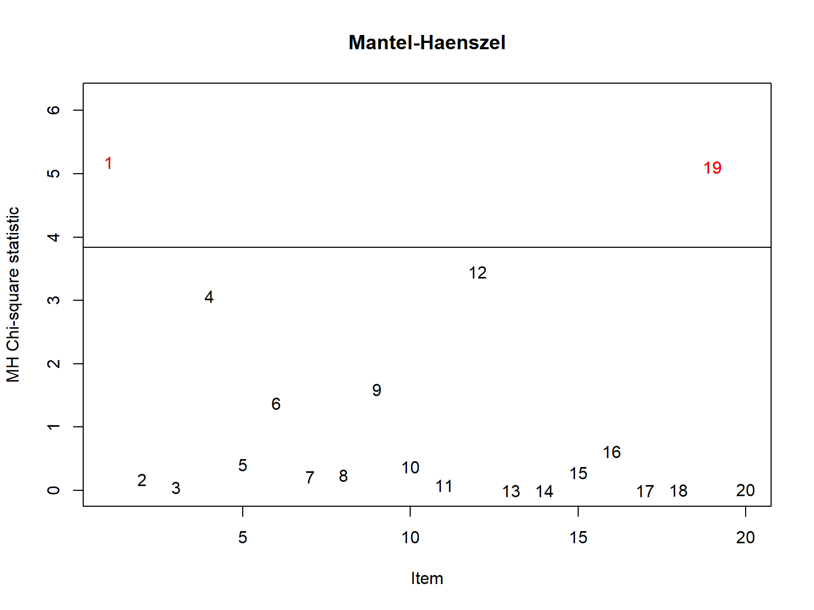
The plot was not captured!The output consists of two sections. The first part shows the MH chi-square statistics for the items and their corresponding p values. We see that two items (items 1 and 19) have been flagged at \(\alpha = .05\) for showing DIF between male and female students because their p values are less than .05. These items are also listed under “Items detected as DIF items”. The second part of the output shows the effect size using ETS delta classification. Two items (items 1 and 19) have been categorized as “B: Moderate DIF”, while the remaining items have been classified as “A: Negligible DIF”. There is no item with a “C: Large DIF” flag. The plot also shows the two items that have been flagged based on the MH chi-square test. These items appear above the horizontal line for the threshold chi-square value (\(\chi^2 = 3.84\) for the significance level of \(\alpha = .05\)).
Let’s also run the same type of analysis for language. This time we
only change the group variable as group = language.
# 2) Run the DIF analysis based on language
lang_MH <- difR::difMH(Data = hci_items, # response data
group = language, # group variable
focal.name = "no", # no for students whose first language is not English
match = "score", # matching variable
purify = TRUE) # if TRUE, purification is used
# Print the results
print(lang_MH)
Detection of Differential Item Functioning using Mantel-Haenszel method
with continuity correction and with item purification
Results based on asymptotic inference
Convergence reached after 2 iterations
Matching variable: test score
No set of anchor items was provided
No p-value adjustment for multiple comparisons
Mantel-Haenszel Chi-square statistic:
Stat. P-value
item1 1.5933 0.2069
item2 1.6164 0.2036
item3 4.3557 0.0369 *
item4 0.0003 0.9870
item5 0.3458 0.5565
item6 2.8791 0.0897 .
item7 0.0841 0.7718
item8 0.0191 0.8900
item9 0.0410 0.8396
item10 2.0092 0.1563
item11 0.0039 0.9499
item12 0.0091 0.9241
item13 0.2976 0.5854
item14 0.4777 0.4895
item15 0.0000 0.9980
item16 7.9690 0.0048 **
item17 0.2822 0.5953
item18 8.4877 0.0036 **
item19 1.1926 0.2748
item20 3.2762 0.0703 .
Signif. codes: 0 '***' 0.001 '**' 0.01 '*' 0.05 '.' 0.1 ' ' 1
Detection threshold: 3.841 (significance level: 0.05)
Items detected as DIF items:
item3
item16
item18
Effect size (ETS Delta scale):
Effect size code:
'A': negligible effect
'B': moderate effect
'C': large effect
alphaMH deltaMH
item1 0.7214 0.7676 A
item2 1.3642 -0.7298 A
item3 1.8628 -1.4619 B
item4 1.0290 -0.0671 A
item5 1.1615 -0.3518 A
item6 0.6357 1.0647 B
item7 1.0840 -0.1895 A
item8 0.9476 0.1264 A
item9 1.0698 -0.1585 A
item10 0.7198 0.7728 A
item11 1.0441 -0.1014 A
item12 1.0030 -0.0070 A
item13 1.1516 -0.3317 A
item14 1.2147 -0.4570 A
item15 1.0260 -0.0603 A
item16 0.5058 1.6018 C
item17 0.8636 0.3447 A
item18 0.4185 2.0468 C
item19 0.7499 0.6764 A
item20 1.5553 -1.0380 B
Effect size codes: 0 'A' 1.0 'B' 1.5 'C'
(for absolute values of 'deltaMH')
Output was not captured! # Visualize the results
plot(lang_MH)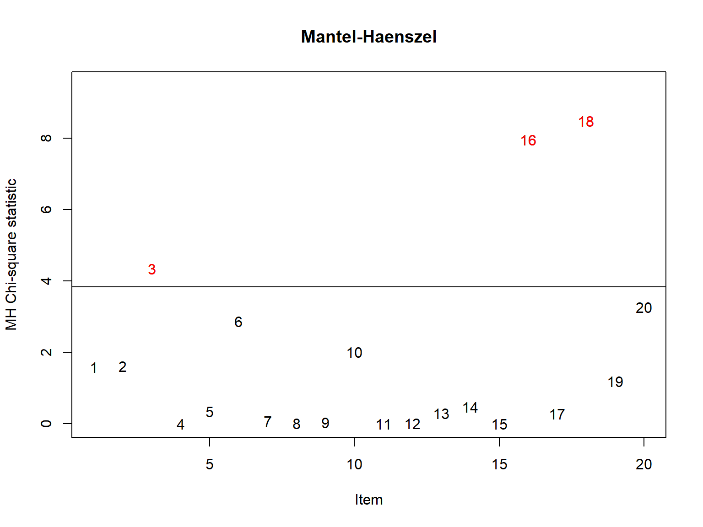
The plot was not captured!The results show that three items (item 3, 16, and 18) have been flagged for having language-based DIF. The effect size using ETS delta classification shows that item 3 has been classified as “B: Moderate DIF” whereas items 16 and 18 have been classified as “C: Large DIF”. In addition to these items, items 6 and 20 have been classified as “B: Moderate DIF”. Therefore, it would be worth examining the content of these items along with the other flagged items and determine why language-based DIF occurs.
The MH method is quite straightforward; however, it is not a powerful DIF method when it comes to detecting non-uniform DIF. In fact, the MH method cannot even distinguish what type of DIF (uniform or non-uniform) occurs in the items. To deal with these limitations, we will also repeat the same DIF analyses using the logistic regression (LR) method. This will allow us to validate our findings from the MH method and detect any additional items that we might have missed.
To implement the LR method, we will use the
difLogistic() function from the difR
package. The arguments for this function are nearly the same as those
for difMH(), except for type = "both" (which
is the default option) to run the DIF analysis for uniform and
nonuniform DIF. Alternatively, we could use either
type = "udif" or type = "nudif" to test the
items for only uniform or nonuniform DIF.
# 1) Run the DIF analysis based on gender
gender_LR <- difR::difLogistic(Data = hci_items, # response data
group = gender, # group variable
focal.name = "F", # F for female students
match = "score", # matching variable
type = "both", # Check both uniform and nonuniform DIF
purify = TRUE) # if TRUE, purification is used
# Print the results
print(gender_LR)
Detection of both types of Differential Item Functioning
using Logistic regression method, with item purification
and with LRT DIF statistic
Convergence reached after 1 iteration
Matching variable: test score
No set of anchor items was provided
No p-value adjustment for multiple comparisons
Logistic regression DIF statistic:
Stat. P-value
item1 7.9458 0.0188 *
item2 0.0069 0.9966
item3 0.7535 0.6861
item4 5.5434 0.0626 .
item5 0.2458 0.8844
item6 1.8683 0.3929
item7 0.2159 0.8977
item8 1.2364 0.5389
item9 4.0294 0.1334
item10 2.2201 0.3295
item11 4.7836 0.0915 .
item12 6.7575 0.0341 *
item13 1.9140 0.3840
item14 0.0040 0.9980
item15 0.8848 0.6425
item16 1.2484 0.5357
item17 0.3616 0.8346
item18 0.6338 0.7284
item19 11.3500 0.0034 **
item20 6.2415 0.0441 *
Signif. codes: 0 '***' 0.001 '**' 0.01 '*' 0.05 '.' 0.1 ' ' 1
Detection threshold: 5.992 (significance level: 0.05)
Items detected as DIF items:
item1
item12
item19
item20
Effect size (Nagelkerke's R^2):
Effect size code:
'A': negligible effect
'B': moderate effect
'C': large effect
R^2 ZT JG
item1 0.0144 A A
item2 0.0000 A A
item3 0.0016 A A
item4 0.0102 A A
item5 0.0004 A A
item6 0.0031 A A
item7 0.0004 A A
item8 0.0022 A A
item9 0.0073 A A
item10 0.0040 A A
item11 0.0095 A A
item12 0.0112 A A
item13 0.0030 A A
item14 0.0000 A A
item15 0.0015 A A
item16 0.0020 A A
item17 0.0008 A A
item18 0.0011 A A
item19 0.0209 A A
item20 0.0109 A A
Effect size codes:
Zumbo & Thomas (ZT): 0 'A' 0.13 'B' 0.26 'C' 1
Jodoin & Gierl (JG): 0 'A' 0.035 'B' 0.07 'C' 1
Output was not captured! # Visualize the results
plot(gender_LR)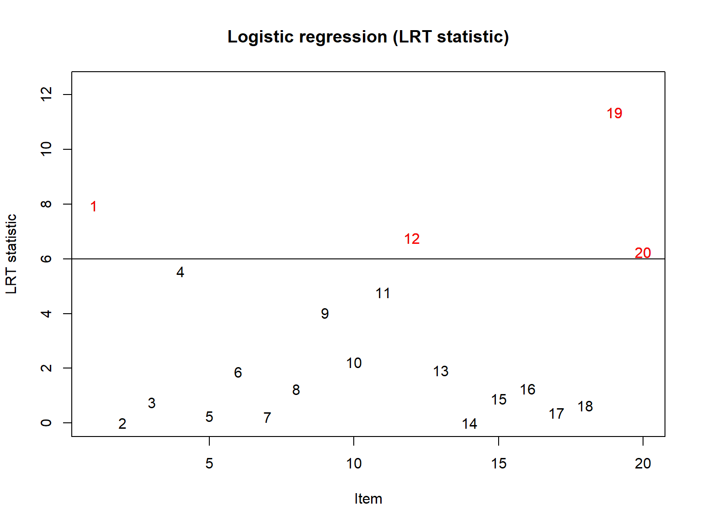
The plot was not captured!Similar to the output from the difMH() function, the
output from the difLogistic() function also consists of two
parts. The top part of the output shows the likelihood ratio test
statistics and corresponding p values for the items. In addition to
items 1 and 19), the LR method detected two more items with DIF, items
12 and 20, at the significance level of \(\alpha = .05\). The second part of the
output shows the effect sizes computed using the pseudo R-squared
differences. The results show that the effect size was “A: Negligible
DIF” for all of the items based on both effect size measures (ZT and
JG). In the plot, we see the four DIF items (items 1, 12, 19, and 20)
above the horizontal line for the threshold likelihood ratio statistic
(5.9915 for the significance level of \(\alpha
= .05\)).
The same plot() function can also be used for creating
individual plots for the flagged items based on the likelihood ratio
statistic. The plot creates separate item characteristic curves where
the x-axis is the total test scores and the y-axis shows the probability
of correct answer (i.e., receiving 1 over 0). This plot can indicate
whether the type of DIF is either uniform or nonuniform and which one of
the two groups (i.e., reference and focal) has the advantage over the
other group. In the following example, we will create item
characteristic curves for items 1 and 19. We specify the item using the
item argument and the plot type using
plot = "itemCurve".
# Visualize individual items
plot(gender_LR, item = 1, plot = "itemCurve")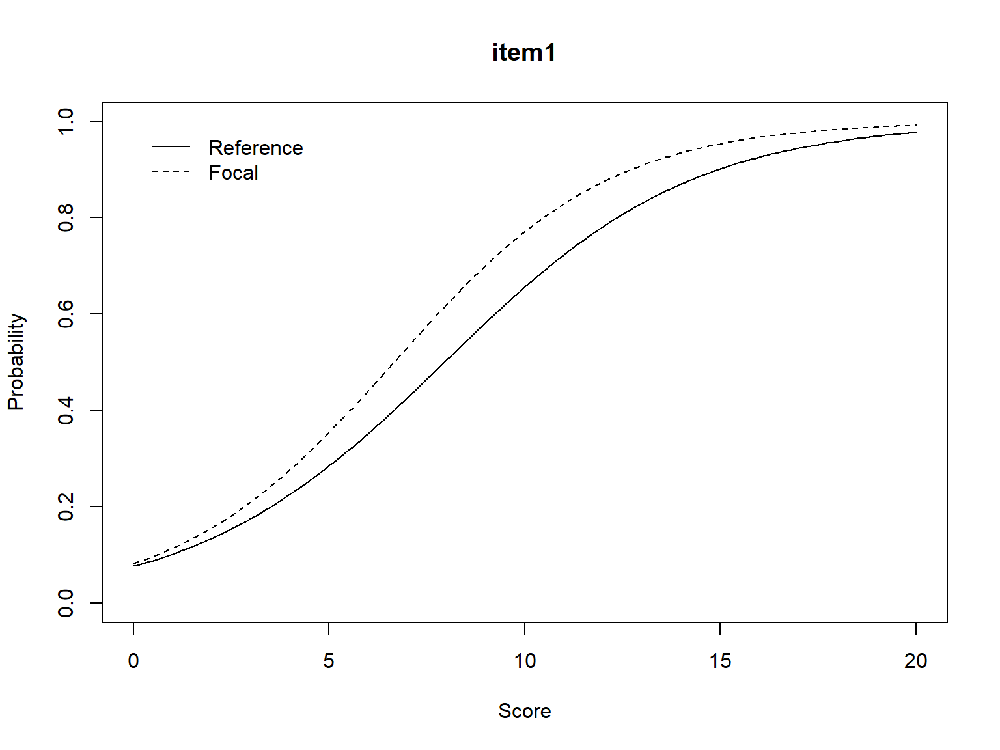
The plot was not captured!plot(gender_LR, item = 19, plot = "itemCurve")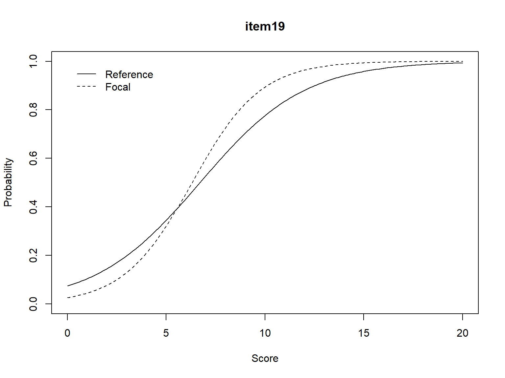
The plot was not captured!From the plots above, we can see that item 1 exhibits uniform DIF where the focal group (i.e., female students) are more likely to answer the item correctly compared to the reference group (i.e., male students). In other words, the item favors the female students. Unlike item 1, item 19 exhibits nonuniform DIF where the reference group is more likely to answer the item correctly until the total score of 5 but then the focal group becomes more advantageous among students with the total score > 5.
Now, we can repeat this process for language by replacing
group = gender with group = language.
# 2) Run the DIF analysis based on language
lang_LR <- difR::difLogistic(Data = hci_items, # response data
group = language, # group variable
focal.name = "no", # no for students whose first language is not English
match = "score", # matching variable
type = "both", # check both uniform and nonuniform DIF
purify = TRUE) # if TRUE, purification is used
# Print the results
print(lang_LR)
Detection of both types of Differential Item Functioning
using Logistic regression method, with item purification
and with LRT DIF statistic
Convergence reached after 4 iterations
Matching variable: test score
No set of anchor items was provided
No p-value adjustment for multiple comparisons
Logistic regression DIF statistic:
Stat. P-value
item1 6.8336 0.0328 *
item2 1.3503 0.5091
item3 3.0770 0.2147
item4 0.9306 0.6279
item5 2.2886 0.3184
item6 4.7808 0.0916 .
item7 3.5067 0.1732
item8 0.7884 0.6742
item9 5.3922 0.0675 .
item10 7.5287 0.0232 *
item11 0.0262 0.9870
item12 0.8611 0.6501
item13 7.1926 0.0274 *
item14 0.6589 0.7193
item15 0.0142 0.9929
item16 14.0757 0.0009 ***
item17 2.3535 0.3083
item18 13.1093 0.0014 **
item19 8.1858 0.0167 *
item20 2.1369 0.3435
Signif. codes: 0 '***' 0.001 '**' 0.01 '*' 0.05 '.' 0.1 ' ' 1
Detection threshold: 5.992 (significance level: 0.05)
Items detected as DIF items:
item1
item10
item13
item16
item18
item19
Effect size (Nagelkerke's R^2):
Effect size code:
'A': negligible effect
'B': moderate effect
'C': large effect
R^2 ZT JG
item1 0.0121 A A
item2 0.0027 A A
item3 0.0067 A A
item4 0.0016 A A
item5 0.0039 A A
item6 0.0079 A A
item7 0.0065 A A
item8 0.0014 A A
item9 0.0094 A A
item10 0.0134 A A
item11 0.0001 A A
item12 0.0014 A A
item13 0.0115 A A
item14 0.0012 A A
item15 0.0000 A A
item16 0.0219 A A
item17 0.0049 A A
item18 0.0243 A A
item19 0.0152 A A
item20 0.0037 A A
Effect size codes:
Zumbo & Thomas (ZT): 0 'A' 0.13 'B' 0.26 'C' 1
Jodoin & Gierl (JG): 0 'A' 0.035 'B' 0.07 'C' 1
Output was not captured! # Visualize the results
plot(lang_LR)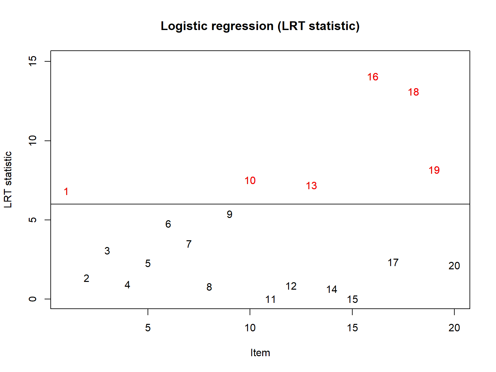
The plot was not captured!The LR method detected six items with language-based DIF: items 1, 10, 13, 16, 18, and 19. However, all of these items have the the effect size of “A: Negligible DIF” based on both effect size measures (ZT and JG). Finally, let’s take a look at two of the items that were flagged for having DIF. In the figures, we can see that item 16 a uniform DIF favoring the focal group whereas item 10 has a non-uniform DIF (i.e. which group is being favored depends on the total score on the test).
# Visualize individual items
plot(lang_LR, item = 10, plot = "itemCurve")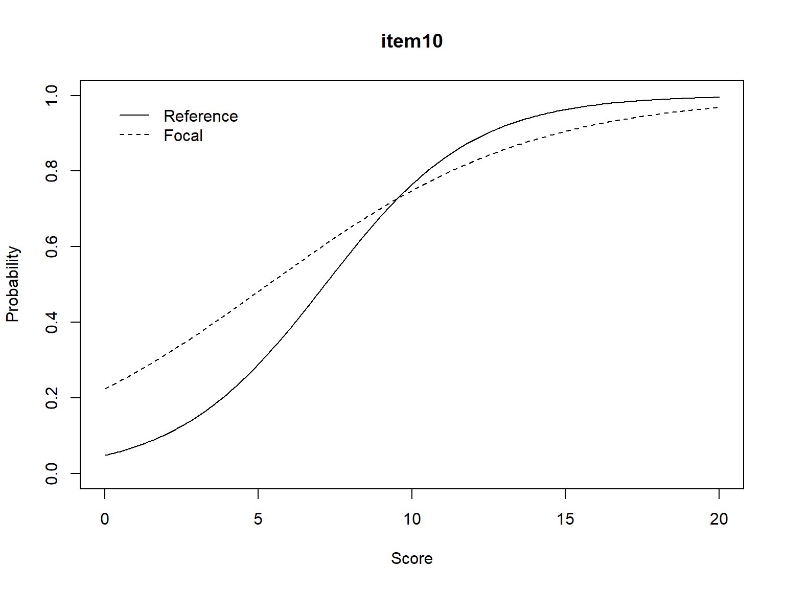
The plot was not captured!plot(lang_LR, item = 16, plot = "itemCurve")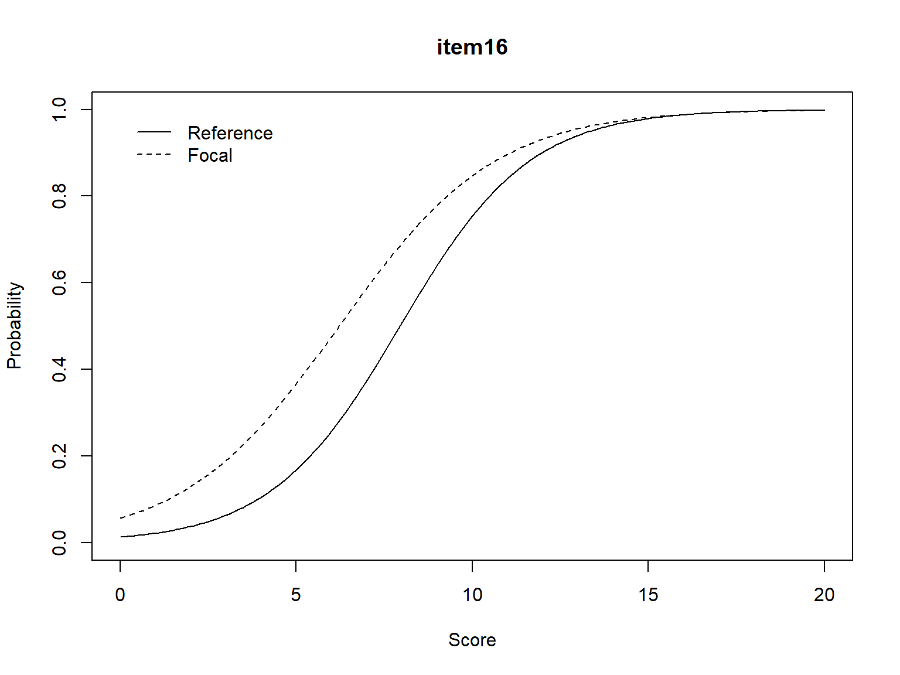
The plot was not captured!